1860
This is the original text of On the Various Forces of Nature, as it was published, for readers who want to see what the modernization is a modernization of. The modern retelling is here. The original is available from Project Gutenberg. Also available as an epub.
Lecture One: The Force of Gravitation
Lecture Two: Gravitation and Cohesion
Lecture Three: Cohesion and Chemical Affinity
Lecture Four: Chemical Affinity and Heat
Lecture Five: Magnetism and Electricity
Lecture Six: The Correlation of the Physical Forces
Lighthouse Illumination: The Electric Light
Which was first, Matter or Force? If we think on this question, we shall find that we are unable to conceive of matter without force, or of force without matter. When God created the elements of which the earth is composed, He created certain wondrous forces, which are set free, and become evident when matter acts on matter. All these forces, with many differences, have much in common, and if one is set free, it will immediately endeavour to free its companions. Thus, heat will enable us to eliminate light, electricity, magnetism, and chemical action; chemical action will educe light, electricity, and heat. In this way we find that all the forces in nature tend to form mutually dependent systems; and as the motion of one star affects another, so force in action liberates and renders evident forces previously tranquil.
We say tranquil, and yet the word is almost without meaning in the Cosmos.--Where do we find tranquillity? The sea, the seat of animal, vegetable, and mineral changes, is at war with the earth, and the air lends itself to the strife. The globe, the scene of perpetual intestine change, is, as a mass, acting on, and acted on, by the other planets of our system, and the very system itself is changing its place in space, under the influence of a known force springing from an unknown centre.
For many years the English public had the privilege of listening to the discourses and speculations of Professor Faraday, at the Royal Institution, on Matter and Forces; and it is not too much to say that no lecturer on Physical Science, since the time of Sir Humphrey Davy, was ever listened to with more delight. The pleasure which all derived from the expositions of Faraday was of a somewhat different kind from that produced by any other philosopher whose lectures we have attended. It was partially derived from his extreme dexterity as an operator: with him we had no chance of apologies for an unsuccessful experiment--no hanging fire in the midst of a series of brilliant demonstrations, producing that depressing tendency akin to the pain felt by an audience at a false note from a vocalist. All was a sparkling stream of eloquence and experimental illustration. We would have defied a chemist loving his science, no matter how often he might himself have repeated an experiment, to feel uninterested when seeing it done by Faraday.
The present publication presents one or two points of interest. In the first place, the Lectures were especially intended for young persons, and are therefore as free as possible from technicalities; and in the second place, they are printed as they were spoken, verbatim et literatim. A careful and skilful reporter took them down; and the manuscript, as deciphered from his notes, was subsequently most carefully corrected by the Editor as regards any scientific points which were not clear to the short-hand writer; hence all that is different arises solely from the impossibility, alas! of conveying the manner as well as the matter of the Lecturer.
May the readers of these Lectures derive one-tenth of the pleasure and instruction from their perusal which they gave to those who had the happiness of hearing them!
W. CROOKES.
It grieves me much to think that I may have been a cause of disturbance in your Christmas arrangements, for nothing is more satisfactory to my mind than to perform what I undertake; but such things are not always left in our own power, and we must submit to circumstances as they are appointed. I will to-day do my best, and will ask you to bear with me if I am unable to give more than a few words; and as a substitute, I will endeavour to make the illustrations of the sense I try to express as full as possible; and if we find by the end of this lecture that we may be justified in continuing them, thinking that next week our power shall be greater,--why, then, with submission to you, we will take such course as you may think fit,--either to go on, or discontinue them; and although I now feel much weakened by the pressure of illness (a mere cold) upon me, both in facility of expression and clearness of thought, I shall here claim, as I always have done on these occasions, the right of addressing myself to the younger members of the audience. And for this purpose, therefore, unfitted as it may seem for an elderly infirm man to do so, I will return to second childhood and become, as it were, young again amongst the young.
Editor's note: The opening lecture was twice postponed on account of Dr. Faraday’s illness.
Let us now consider, for a little while, how wonderfully we stand upon this world. Here it is we are born, bred, and live, and yet we view these things with an almost entire absence of wonder to ourselves respecting the way in which all this happens. So small, indeed, is our wonder, that we are never taken by surprise; and I do think that, to a young person of ten, fifteen, or twenty years of age, perhaps the first sight of a cataract or a mountain would occasion him more surprise than he had ever felt concerning the means of his own existence,--how he came here; how he lives; by what means he stands upright; and through what means he moves about from place to place. Hence, we come into this world, we live, and depart from it, without our thoughts being called specifically to consider how all this takes place; and were it not for the exertions of some few inquiring minds, who have looked into these things and ascertained the very beautiful laws and conditions by which we do live and stand upon the earth, we should hardly be aware that there was anything wonderful in it. These inquiries, which have occupied philosophers from the earliest days, when they first began to find out the laws by which we grow, and exist, and enjoy ourselves, up to the present time, have shewn us that all this was effected in consequence of the existence of certain forces, or abilities to do things, or powers, that are so common that nothing can be more so; for nothing is commoner than the wonderful powers by which we are enabled to stand upright--they are essential to our existence every moment.
It is my purpose to-day to make you acquainted with some of these powers; not the vital ones, but some of the more elementary, and, what we call, physical powers: and, in the outset, what can I do to bring to your minds a notion of neither more nor less than that which I mean by the word power, or force? Suppose I take this sheet of paper, and place it upright on one edge, resting against a support before me (as the roughest possible illustration of something to be disturbed), and suppose I then pull this piece of string which is attached to it. I pull the paper over. I have therefore brought into use a power of doing so--the power of my hand carried on through this string in a way which is very remarkable when we come to analyse it; and it is by means of these powers conjointly (for there are several powers here employed) that I pull the paper over. Again, if I give it a push upon the other side, I bring into play a power, but a very different exertion of power from the former; or, if I take now this bit of shell-lac [a stick of shell-lac about 12 inches long and 1½ in diameter] and rub it with flannel, and hold it an inch or so in front of the upper part of this upright sheet, the paper is immediately moved towards the shell-lac, and by now drawing the latter away, the paper falls over without having been touched by anything. You see--in the first illustration I produced an effect than which nothing could be commoner--I pull it over now, not by means of that string or the pull of my hand, but by some action in the shell-lac. The shell-lac, therefore, has a power wherewith it acts upon the sheet of paper; and as an illustration of the exercise of another kind of power, I might use gunpowder with which to throw it over.
Now, I want you to endeavour to comprehend that when I am speaking of a power or force, I am speaking of that which I used just now to pull over this piece of paper. I will not embarrass you at present with the name of that power, but it is clear there was a something in the shell-lac which acted by attraction, and pulled the paper over; this, then, is one of those things which we call power, or force; and you will now be able to recognise it as such in whatever form I shew it to you. We are not to suppose that there are so very many different powers; on the contrary, it is wonderful to think how few are the powers by which all the phenomena of nature are governed. There is an illustration of another kind of power in that lamp; there is a power of heat--a power of doing something, but not the same power as that which pulled the paper over: and so, by degrees, we find that there are certain other powers (not many) in the various bodies around us. And thus, beginning with the simplest experiments of pushing and pulling, I shall gradually proceed to distinguish these powers one from the other, and compare the way in which they combine together. This world upon which we stand (and we have not much need to travel out of the world for illustrations of our subject; but the mind of man is not confined like the matter of his body, and thus he may and does travel outwards; for wherever his sight can pierce, there his observations can penetrate) is pretty nearly a round globe, having its surface disposed in a manner of which this terrestrial globe by my side is a rough model; so much is land and so much is water, and by looking at it here we see in a sort of map or picture how the world is formed upon its surface. Then, when we come to examine further, I refer you to this sectional diagram of the geological strata of the earth, in which there is a more elaborate view of what is beneath the surface of our globe. And when we come to dig into or examine it (as man does for his own instruction and advantage, in a variety of ways), we see that it is made up of different kinds of matter, subject to a very few powers, and all disposed in this strange and wonderful way, which gives to man a history--and such a history--as to what there is in those veins, in those rocks, the ores, the water springs, the atmosphere around, and all varieties of material substances, held together by means of forces in one great mass, 8,000 miles in diameter, that the mind is overwhelmed in contemplation of the wonderful history related by these strata (some of which are fine and thin like sheets of paper),--all formed in succession by the forces of which I have spoken.
I now shall try to help your attention to what I may say by directing, to-day, our thoughts to one kind of power. You see what I mean by the term matter--any of these things that I can lay hold of with the hand, or in a bag (for I may take hold of the air by enclosing it in a bag)--they are all portions of matter with which we have to deal at present, generally or particularly, as I may require to illustrate my subject. Here is the sort of matter which we call water,--it is there ice [pointing to a block of ice upon the table], there water [pointing to the water boiling in a flask], here vapour--you see it issuing out from the top [of the flask]. Do not suppose that that ice and that water are two entirely different things, or that the steam rising in bubbles and ascending in vapour there is absolutely different from the fluid water. It may be different in some particulars, having reference to the amounts of power which it contains; but it is the same, nevertheless, as the great ocean of water around our globe, and I employ it here for the sake of illustration, because if we look into it we shall find that it supplies us with examples of all the powers to which I shall have to refer. For instance, here is water--it is heavy; but let us examine it with regard to the amount of its heaviness, or its gravity. I have before me a little glass vessel and scales [nearly equipoised scales, one of which contained a half-pint glass vessel], and the glass vessel is at present the lighter of the two; but if I now take some water and pour it in, you see that that side of the scales immediately goes down; that shews you (using common language, which I will not suppose for the present you have hitherto applied very strictly) that it is heavy: and if I put this additional weight into the opposite scale, I should not wonder if this vessel would hold water enough to weigh it down. [The Lecturer poured more water into the jar, which again went down.] Why do I hold the bottle above the vessel to pour the water into it? You will say, because experience has taught me that it is necessary. I do it for a better reason--because it is a law of nature that the water should fall towards the earth, and therefore the very means which I use to cause the water to enter the vessel are those which will carry the whole body of water down. That power is what we call gravity, and you see there [pointing to the scales] a good deal of water gravitating towards the earth. Now here [exhibiting a small piece of platinum] is another thing which gravitates towards the earth as much as the whole of that water. See what a little there is of it--that little thing is heavier than so much water [placing the metal in opposite scales to the water]. What a wonderful thing it is to see that it requires so much water as that [a half-pint vessel full] to fall towards the earth, compared with the little mass of substance I have here! And again, if I take this metal [a bar of aluminium about eight times the bulk of the platinum], we find the water will balance that as well as it did the platinum; so that we get, even in the very outset, an example of what we want to understand by the words forces or powers.
Editor's note: Platinum, with one exception, the heaviest body known, is 21½ times heavier than water.
Editor's note: Aluminium is 2½ times heavier than water.
I have spoken of water, and first of all of its property of falling downwards. You know very well how the oceans surround the globe--how they fall round the surface, giving roundness to it, clothing it like a garment; but, besides that, there are other properties of water. Here, for instance, is some quick-lime, and if I add some water to it, you will find another power or property in the water. It is now very hot, it is steaming up, and I could perhaps light phosphorus or a lucifer match with it. Now, that could not happen without a force in the water to produce the result; but that force is entirely distinct from its power of falling to the earth. Again, here is another substance [some anhydrous sulphate of copper] which will illustrate another kind of power. [The Lecturer here poured some water over the white sulphate of copper, which immediately became blue, evolving considerable heat at the same time.] Here is the same water, with a substance which heats nearly as much as the lime does; but see how differently. So great indeed is this heat in the case of lime, that it is sufficient sometimes (as you see here) to set wood on fire; and this explains what we have sometimes heard, of barges laden with quick-lime taking fire in the middle of the river, in consequence of this power of heat brought into play by a leakage of the water into the barge. You see how strangely different subjects for our consideration arise, when we come to think over these various matters,--the power of heat evolved by acting upon lime with water, and the power which water has of turning this salt of copper from white to blue.
Editor's note: Power or Property in Water.--This power--the heat by which the water is kept in a fluid state--is said, under ordinary circumstances, to be latent or insensible. When, however, the water changes its form, and, by uniting with the lime or sulphate of copper, becomes solid, the heat which retained it in a liquid state is evolved.
Editor's note: Anhydrous Sulphate of Copper: sulphate of copper deprived of its water of crystallisation. To obtain it, the blue sulphate is calcined in an earthen crucible.
I want you now to understand the nature of the most simple exertion of this power of matter called weight, or gravity. Bodies are heavy--you saw that in the case of water when I placed it in the balance. Here I have what we call a weight [an iron half cwt.]--a thing called a weight, because in it the exercise of that power of pressing downwards is especially used for the purposes of weighing; and I have also one of these little inflated india-rubber bladders, which are very beautiful although very common (most beautiful things are common), and I am going to put the weight upon it, to give you a sort of illustration of the downward pressure of the iron, and of the power which the air possesses of resisting that pressure. It may burst, but we must try to avoid that [During the last few observations the Lecturer had succeeded in placing the half cwt. in a state of quiescence upon the inflated india-rubber ball, which consequently assumed a shape very much resembling a flat cheese with round edges.] There you see a bubble of air bearing half a hundred weight, and you must conceive for yourselves what a wonderful power there must be to pull this weight downwards, to sink it thus in the ball of air.
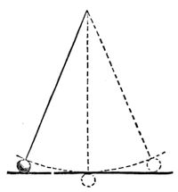
Let me now give you another illustration of this power. You know what a pendulum is. I have one here (fig. 1), and if I set it swinging, it will continue to swing to and fro. Now, I wonder whether you can tell me why that body oscillates to and fro--that pendulum bob as it is sometimes called. Observe, if I hold the straight stick horizontally, as high as the position of the balls at the two ends of its journey you see that the ball is in a higher position at the two extremities than it is when in the middle. Starting from one end of the stick, the ball falls towards the centre; and then rising again to the opposite end, it constantly tries to fall to the lowest point, swinging and vibrating most beautifully, and with wonderful properties in other respects--the time of its vibration, and so on--but concerning which we will not now trouble ourselves.
If a gold leaf, or piece of thread, or any other substance, were hung where this ball is, it would swing to and fro in the same manner, and in the same time too. Do not be startled at this statement: I repeat, in the same manner and in the same time; and you will see by and by how this is. Now, that power which caused the water to descend in the balance--which made the iron weight press upon and flatten the bubble of air--which caused the swinging to and fro of the pendulum,--that power is entirely due to the attraction which there is between the falling body and the earth. Let us be slow and careful to comprehend this. It is not that the earth has any particular attraction towards bodies which fall to it, but, that all these bodies possess an attraction, every one towards the other. It is not that the earth has any special power which these balls themselves have not; for just as much power as the earth has to attract these two balls [dropping two ivory balls], just so much power have they in proportion to their bulks to draw themselves one to the other; and the only reason why they fall so quickly to the earth is owing to its greater size. Now, if I were to place these two balls near together, I should not be able, by the most delicate arrangement of apparatus, to make you, or myself, sensible that these balls did attract one another: and yet we know that such is the case, because, if instead of taking a small ivory ball, we take a mountain, and put a ball like this near it, we find that, owing to the vast size of the mountain, as compared with the billiard ball, the latter is drawn slightly towards it; shewing clearly that an attraction does exist, just as it did between the shell-lac which I rubbed and the piece of paper which was overturned by it.
Now, it is not very easy to make these things quite clear at the outset, and I must take care not to leave anything unexplained as I proceed; and, therefore, I must make you clearly understand that all bodies are attracted to the earth, or, to use a more learned term, gravitate. You will not mind my using this word; for when I say that this penny-piece gravitates, I mean nothing more nor less than that it falls towards the earth, and if not intercepted, it would go on falling, falling, until it arrived at what we call the centre of gravity of the earth, which I will explain to you by and by.
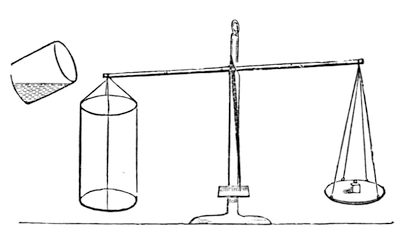
I want you to understand that this property of gravitation is never lost, that every substance possesses it, that there is never any change in the quantity of it; and, first of all, I will take as illustration a piece of marble. Now this marble has weight--as you will see if I put it in these scales; it weighs the balance down, and if I take it off, the balance goes back again and resumes its equilibrium. I can decompose this marble and change it, in the same manner as I can change ice into water and water into steam. I can convert a part of it into its own steam easily, and shew you that this steam from the marble has the property of remaining in the same place at common temperatures, which water-steam has not. If I add a little liquid to the marble, and decompose it, I get that which you see--[the Lecturer here put several lumps of marble into a glass jar, and poured water and then acid over them; the carbonic acid immediately commenced to escape with considerable effervescence]--the appearance of boiling, which is only the separation of one part of the marble from another. Now this [marble] steam, and that [water] steam, and all other steams gravitate, just like any other substance does--they all are attracted the one towards the other, and all fall towards the earth; and what I want you to see is, that this steam gravitates. I have here (fig. 2) a large vessel placed upon a balance, and the moment I pour this steam into it, you see that the steam gravitates. Just watch the index, and see whether it tilts over or not. [The Lecturer here poured the carbonic acid out of the glass in which it was being generated into the vessel suspended on the balance, when the gravitation of the carbonic acid was at once apparent.] Look how it is going down. How pretty that is! I poured nothing in but the invisible steam, or vapour, or gas which came from the marble, but you see that part of the marble, although it has taken the shape of air, still gravitates as it did before. Now, will it weigh down that bit of paper? [Placing a piece of paper in the opposite scale.] Yes, more than that; it nearly weighs down this bit of paper. [Placing another piece of paper in.] And thus you see that other forms of matter besides solids and liquids tend to fall to the earth; and, therefore, you will accept from me the fact--that all things gravitate, whatever may be their form or condition. Now here is another chemical test which is very readily applied. [Some of the carbonic acid was poured from one vessel into another, and its presence in the latter shewn by introducing into it a lighted taper, which was immediately extinguished.] You see from this result also that it gravitates. All these experiments shew you that, tried by the balance, tried by pouring like water from one vessel to another, this steam, or vapour, or gas, is, like all other things, attracted to the earth.
Editor's note: Add a little liquid to the marble, and decompose it.--Marble is composed of carbonic acid and lime, and, in chemical language, is called carbonate of lime. When sulphuric acid is added to it, the carbonic acid is set free, and the sulphuric acid unites with the lime to form sulphate of lime. Carbonic acid, under ordinary circumstances, is a colourless invisible gas, about half as heavy again as air. Dr. Faraday first shewed that, under great pressure, it could be obtained in a liquid state. Thilorier, a French chemist, afterwards found that it could be solidified.
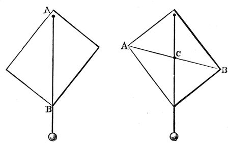
There is another point I want in the next place to draw your attention to. I have here a quantity of shot; each of these falls separately, and each has its own gravitating power, as you perceive when I let them fall loosely on a sheet of paper. If I put them into a bottle, I collect them together as one mass; and philosophers have discovered that there is a certain point in the middle of the whole collection of shots that may be considered as the one point in which all their gravitating power is centred, and that point they call the centre of gravity: it is not at all a bad name, and rather a short one--the centre of gravity. Now suppose I take a sheet of pasteboard, or any other thing easily dealt with, and run a bradawl through it at one corner A (fig. 3), and Mr. Anderson hold that up in his hand before us, and I then take a piece of thread and an ivory ball, and hang that upon the awl--then the centre of gravity of both the pasteboard and the ball and string are as near as they can get to the centre of the earth; that is to say, the whole of the attracting power of the earth is, as it were, centred in a single point of the cardboard--and this point is exactly below the point of suspension. All I have to do, therefore, is to draw a line, A B, corresponding with the string, and we shall find that the centre of gravity is somewhere in that line. But where? To find that out, all we have to do is to take another place for the awl (fig. 4), hang the plumb-line, and make the same experiment, and there [at the point C] is the centre of gravity--there where the two lines which I have traced cross each other; and if I take that pasteboard, and make a hole with the bradawl through it at that point, you will see that it will be supported in any position in which it may be placed. Now, knowing that, what do I do when I try to stand upon one leg? Do you not see that I push myself over to the left side, and quietly take up the right leg, and thus bring some central point in my body over this left leg. What is that point which I throw over? You will know at once that it is the centre of gravity--that point in me where the whole gravitating force of my body is centred, and which I thus bring in a line over my foot.
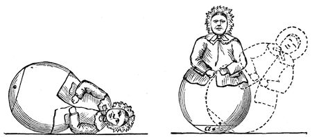
Here is a toy I happened to see the other day, which will, I think, serve to illustrate our subject very well. That toy ought to lie something in this manner (fig. 5); and would do so if it were uniform in substance. But you see it does not; it will get up again. And now philosophy comes to our aid; and I am perfectly sure, without looking inside the figure, that there is some arrangement by which the centre of gravity is at the lowest point when the image is standing upright; and we may be certain, when I am tilting it over (see fig. 6), that I am lifting up the centre of gravity (a), and raising it from the earth. All this is effected by putting a piece of lead inside the lower part of the image, and making the base of large curvature; and there you have the whole secret. But what will happen if I try to make the figure stand upon a sharp point? You observe, I must get that point exactly under the centre of gravity, or it will fall over thus [endeavouring unsuccessfully to balance it]; and this you see is a difficult matter--I cannot make it stand steadily. But if I embarrass this poor old lady with a world of trouble, and hang this wire with bullets at each end about her neck, it is very evident that, owing to there being those balls of lead hanging down on either side, in addition to the lead inside, I have lowered the centre of gravity, and now she will stand upon this point (fig. 7); and what is more, she proves the truth of our philosophy by standing sideways.
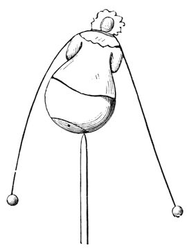
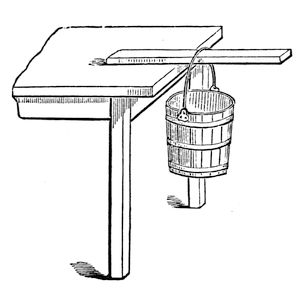
I remember an experiment which puzzled me very much when a boy. I read it in a conjuring book, and this was how the problem was put to us: “How,” as the book said, “how to hang a pail of water, by means of a stick, upon the side of a table” (fig. 8). Now, I have here a table, a piece of stick, and a pail, and the proposition is, how can that pail be hung to the edge of this table? It is to be done; and can you at all anticipate what arrangement I shall make to enable me to succeed? Why, this. I take a stick, and put it in the pail between the bottom and the horizontal piece of wood, and thus give it a stiff handle--and there it is; and what is more, the more water I put into the pail the better it will hang. It is very true that before I quite succeeded I had the misfortune to push the bottoms of several pails out; but here it is hanging firmly (fig. 9), and you now see how you can hang up the pail in the way which the conjuring books require.
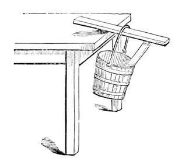
Again, if you are really so inclined (and I do hope all of you are), you will find a great deal of philosophy in this [holding up a cork and a pointed thin stick about a foot long]. Do not refer to your toy-books, and say you have seen that before. Answer me rather, if I ask you have you understood it before? It is an experiment which appeared very wonderful to me when I was a boy; I used to take a piece of cork (and I remember, I thought at first that it was very important that it should be cut out in the shape of a man; but by degrees I got rid of that idea), and the problem was to balance it on the point of a stick. Now, you will see I have only to place two sharp-pointed sticks one on each side, and give it wings, thus, and you will find this beautiful condition fulfilled.
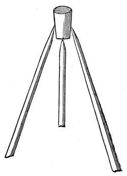
We come now to another point:--All bodies, whether heavy or light, fall to the earth by this force which we call gravity. By observation, moreover, we see that bodies do not occupy the same time in falling. I think you will be able to see that this piece of paper and that ivory ball fall with different velocities to the table [dropping them]; and if, again, I take a feather and an ivory ball, and let them fall, you see they reach the table or earth at different times--that is to say, the ball falls faster than the feather. Now, that should not be so, for all bodies do fall equally fast to the earth. There are one or two beautiful points included in that statement. First of all, it is manifest that an ounce, or a pound, or a ton, or a thousand tons, all fall equally fast, no one faster than another: here are two balls of lead, a very light one and a very heavy one, and you perceive they both fall to the earth in the same time. Now, if I were to put into a little bag a number of these balls sufficient to make up a bulk equal to the large one, they would also fall in the same time; for if an avalanche fall from the mountains, the rocks, snow and ice, together falling towards the earth, fall with the same velocity, whatever be their size.
I cannot take a better illustration of this than that of gold leaf, because it brings before us the reason of this apparent difference in the time of the fall. Here is a piece of gold-leaf. Now, if I take a lump of gold and this gold-leaf, and let them fall through the air together, you see that the lump of gold--the sovereign, or coin--will fall much faster than the gold leaf. But why? They are both gold, whether sovereign or gold-leaf. Why should they not fall to the earth with the same quickness? They would do so, but that the air around our globe interferes very much where we have the piece of gold so extended and enlarged as to offer much obstruction on falling through it. I will, however, shew you that gold-leaf does fall as fast when the resistance of the air is excluded--for if I take a piece of gold-leaf and hang it in the centre of a bottle, so that the gold, and the bottle, and the air within shall all have an equal chance of falling, then the gold-leaf will fall as fast as anything else. And if I suspend the bottle containing the gold-leaf to a string, and set it oscillating like a pendulum, I may make it vibrate as hard as I please, and the gold-leaf will not be disturbed, but will swing as steadily as a piece of iron would do; and I might even swing it round my head with any degree of force, and it would remain undisturbed. Or I can try another kind of experiment:--if I raise the gold-leaf in this way [pulling the bottle up to the ceiling of the theatre by means of a cord and pulley, and then suddenly letting it fall to within a few inches of the lecture-table], and allow it then to fall from the ceiling downwards (I will put something beneath to catch it, supposing I should be maladroit), you will perceive that the gold-leaf is not in the least disturbed. The resistance of the air having been avoided, the glass bottle and gold-leaf all fall exactly in the same time.
Here is another illustration,--I have hung a piece of gold-leaf in the upper part of this long glass vessel, and I have the means, by a little arrangement at the top, of letting the gold-leaf loose. Before we let it loose we will remove the air by means of an air pump, and while that is being done, let me shew you another experiment of the same kind. Take a penny-piece, or a half-crown, and a round piece of paper a trifle smaller in diameter than the coin, and try them, side by side, to see whether they fall at the same time [dropping them]. You see they do not--the penny-piece goes down first. But, now place this paper flat on the top of the coin, so that it shall not meet with any resistance from the air, and upon then dropping them you see they do both fall in the same time [exhibiting the effect]. I dare say, if I were to put this piece of gold-leaf, instead of the paper, on the coin, it would do as well. It is very difficult to lay the gold-leaf so flat that the air shall not get under it and lift it up in falling, and I am rather doubtful as to the success of this, because the gold-leaf is puckery; but will risk the experiment. There they go together! [letting them fall] and you see at once that they both reach the table at the same moment.
We have now pumped the air out of the vessel, and you will perceive that the gold-leaf will fall as quickly in this vacuum as the coin does in the air. I am now going to let it loose, and you must watch to see how rapidly it falls. There! [letting the gold loose] there it is, falling as gold should fall.
I am sorry to see our time for parting is drawing so near. As we proceed, I intend to write upon the board behind me certain words, so as to recall to your minds what we have already examined--and I put the word FORCES as a heading; and I will then add, beneath, the names of the special forces according to the order in which we consider them: and although I fear that I have not sufficiently pointed out to you the more important circumstances connected with this force of GRAVITATION, especially the law which governs its attraction (for which, I think, I must take up a little time at our next meeting), still I will put that word on the board, and hope you will now remember that we have in some degree considered the force of gravitation--that force which causes all bodies to attract each other when they are at sensible distances apart, and tends to draw them together.
Do me the favour to pay me as much attention as you did at our last meeting, and I shall not repent of that which I have proposed to undertake. It will be impossible for us to consider the Laws of Nature, and what they effect, unless we now and then give our sole attention, so as to obtain a clear idea upon the subject. Give me now that attention, and then, I trust, we shall not part without your knowing something about those Laws, and the manner in which they act. You recollect, upon the last occasion, I explained that all bodies attracted each other, and that this power we called gravitation. I told you that when we brought these two bodies [two equal sized ivory balls suspended by threads] near together, they attracted each other, and that we might suppose that the whole power of this attraction was exerted between their respective centres of gravity; and furthermore, you learned from me, that if, instead of a small ball, I took a larger one, like that [changing one of the balls for a much larger one], there was much more of this attraction exerted; or, if I made this ball larger and larger, until, if it were possible, it became as large as the Earth itself--or, I might take the Earth itself as the large ball--that then the attraction would become so powerful as to cause them to rush together in this manner [dropping the ivory ball]. You sit there upright, and I stand upright here, because we keep our centres of gravity properly balanced with respect to the earth; and I need not tell you that on the other side of this world the people are standing and moving about with their feet towards our feet, in a reversed position as compared with us, and all by means of this power of gravitation to the centre of the earth.
I must not, however, leave the subject of gravitation, without telling you something about its laws and regularity; and first, as regards its power with respect to the distance that bodies are apart. If I take one of these balls and place it within an inch of the other, they attract each other with a certain power. If I hold it at a greater distance off, they attract with less power; and if I hold it at a greater distance still, their attraction is still less. Now this fact is of the greatest consequence; for, knowing this law, philosophers have discovered most wonderful things. You know that there is a planet, Uranus, revolving round the sun with us, but eighteen hundred millions of miles off; and because there is another planet as far off as three thousand millions of miles, this law of attraction, or gravitation, still holds good--and philosophers actually discovered this latter planet, Neptune, by reason of the effects of its attraction at this overwhelming distance. Now I want you clearly to understand what this law is. They say (and they are right) that two bodies attract each other inversely as the square of the distance--a sad jumble of words until you understand them; but I think we shall soon comprehend what this law is, and what is the meaning of the “inverse square of the distance.”
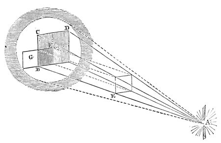
I have here (fig. 11) a lamp A, shining most intensely upon this disc, B, C, D; and this light acts as a sun by which I can get a shadow from this little screen, B F (merely a square piece of card), which, as you know, when I place it close to the large screen, just shadows as much of it as is exactly equal to its own size. But now let me take this card E, which is equal to the other one in size, and place it midway between the lamp and the screen: now look at the size of the shadow B D--it is four times the original size. Here, then, comes the “inverse square of the distance.” This distance, A E, is one, and that distance, A B, is two; but that size E being one, this size B D of shadow is four instead of two, which is the square of the distance; and, if I put the screen at one-third of the distance from the lamp, the shadow on the large screen would be nine times the size. Again, if I hold this screen here, at B F, a certain amount of light falls on it; and if I hold it nearer the lamp at E, more light shines upon it. And you see at once how much--exactly the quantity which I have shut off from the part of this screen, B D, now in shadow; moreover, you see that if I put a single screen here, at G, by the side of the shadow, it can only receive one-fourth of the proportion of light which is obstructed. That, then, is what is meant by the inverse of the square of the distance. This screen E is the brightest, because it is the nearest; and there is the whole secret of this curious expression, inversely as the square of the distance. Now, if you cannot perfectly recollect this when you go home, get a candle and throw a shadow of something--your profile, if you like--on the wall, and then recede or advance, and you will find that your shadow is exactly in proportion to the square of the distance you are off the wall; and then if you consider how much light shines on you at one distance, and how much at another, you get the inverse accordingly. So it is as regards the attraction of these two balls--they attract according to the square of the distance, inversely. I want you to try and remember these words, and then you will be able to go into all the calculations of astronomers as to the planets and other bodies, and tell why they move so fast, and why they go round the sun without falling into it, and be prepared to enter upon many other interesting inquiries of the like nature.
Let us now leave this subject which I have written upon the board under the word FORCE--GRAVITATION--and go a step further. All bodies attract each other at sensible distances. I shewed you the electric attraction on the last occasion (though I did not call it so); that attracts at a distance: and in order to make our progress a little more gradual, suppose I take a few iron particles [dropping some small fragments of iron on the table]. There, I have already told you that in all cases where bodies fall, it is the particles that are attracted. You may consider these then as separate particles magnified, so as to be evident to your sight; they are loose from each other--they all gravitate--they all fall to the earth--for the force of gravitation never fails. Now, I have here a centre of power which I will not name at present, and when these particles are placed upon it, see what an attraction they have for each other.
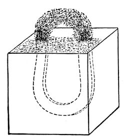
Here I have an arch of iron filings (fig. 12) regularly built up like an iron bridge, because I have put them within a sphere of action which will cause them to attract each other. See!--I could let a mouse run through it, and yet if I try to do the same thing with them here [on the table], they do not attract each other at all. It is that [the magnet] which makes them hold together. Now, just as these iron particles hold together in the form of an elliptical bridge, so do the different particles of iron which constitute this nail hold together and make it one. And here is a bar of iron--why, it is only because the different parts of this iron are so wrought as to keep close together by the attraction between the particles that it is held together in one mass. It is kept together, in fact, merely by the attraction of one particle to another, and that is the point I want now to illustrate. If I take a piece of flint and strike it with a hammer, and break it thus [breaking off a piece of the flint], I have done nothing more than separate the particles which compose these two pieces so far apart, that their attraction is too weak to cause them to hold together, and it is only for that reason that there are now two pieces in the place of one. I will shew you an experiment to prove that this attraction does still exist in those particles, for here is a piece of glass (for what was true of the flint and the bar of iron is true of the piece of glass, and is true of every other solid--they are all held together in the lump by the attraction between their parts), and I can shew you the attraction between its separate particles; for if I take these portions of glass, which I have reduced to very fine powder, you see that I can actually build them up into a solid wall by pressure between two flat surfaces. The power which I thus have of building up this wall is due to the attraction of the particles, forming as it were the cement which holds them together; and so in this case, where I have taken no very great pains to bring the particles together, you see perhaps a couple of ounces of finely-pounded glass standing as an upright wall. Is not this attraction most wonderful? That bar of iron one inch square has such power of attraction in its particles--giving to it such strength--that it will hold up twenty tons weight before the little set of particles in the small space, equal to one division across which it can be pulled apart, will separate. In this manner suspension bridges and chains are held together by the attraction of their particles; and I am going to make an experiment which will shew how strong is this attraction of the particles. [The Lecturer here placed his foot on a loop of wire fastened to a support above, and swung with his whole weight resting upon it for some moments.] You see while hanging here all my weight is supported by these little particles of the wire, just as in pantomimes they sometimes suspend gentlemen and damsels.
How can we make this attraction of the particles a little more simple? There are many things which if brought together properly will shew this attraction. Here is a boy’s experiment (and I like a boy’s experiment). Get a tobacco-pipe, fill it with lead, melt it, and then pour it out upon a stone, and thus get a clean piece of lead (this is a better plan than scraping it--scraping alters the condition of the surface of the lead). I have here some pieces of lead which I melted this morning for the sake of making them clean. Now these pieces of lead hang together by the attraction of their particles; and if I press these two separate pieces close together, so as to bring their particles within the sphere of attraction, you will see how soon they become one. I have merely to give them a good squeeze, and draw the upper piece slightly round at the same time, and here they are as one, and all the bending and twisting I can give them will not separate them again: I have joined the lead together, not with solder, but simply by means of the attraction of the particles.
This, however, is not the best way of bringing those particles together--we have many better plans than that; and I will shew you one that will do very well for juvenile experiments. There is some alum crystallised very beautifully by nature (for all things are far more beautiful in their natural than their artificial form), and here I have some of the same alum broken into fine powder. In it I have destroyed that force of which I have placed the name on this board--COHESION, or the attraction exerted between the particles of bodies to hold them together. Now I am going to shew you that if we take this powdered alum and some hot water, and mix them together, I shall dissolve the alum--all the particles will be separated by the water far more completely than they are here in the powder; but then, being in the water, they will have the opportunity as it cools (for that is the condition which favours their coalescence) of uniting together again and forming one mass.
Editor's note: Crystallisation of Alum.--The solution must be saturated--that is, it must contain as much alum as can possibly be dissolved. In making the solution, it is best to add powdered alum to hot water as long as it dissolves; and when no more is taken up, allow the solution to stand a few minutes, and then pour it off from the dirt and undissolved alum.
Now, having brought the alum into solution, I will pour it into this glass basin, and you will, to-morrow, find that those particles of alum which I have put into the water, and so separated that they are no longer solid, will, as the water cools, come together and cohere, and by to-morrow morning we shall have a great deal of the alum crystallised out--that is to say, come back to the solid form. [The Lecturer here poured a little of the hot solution of alum into the glass dish, and when the latter had thus been made warm, the remainder of the solution was added.] I am now doing that which I advise you to do if you use a glass vessel, namely, warming it slowly and gradually; and in repeating this experiment, do as I do--pour the liquid out gently, leaving all the dirt behind in the basin: and remember that the more carefully and quietly you make this experiment at home, the better the crystals. To-morrow you will see the particles of alum drawn together; and if I put two pieces of coke in some part of the solution (the coke ought first to be washed very clean, and dried), you will find to-morrow that we shall have a beautiful crystallisation over the coke, making it exactly resemble a natural mineral.
Now, how curiously our ideas expand by watching these conditions of the attraction of cohesion!--how many new phenomena it gives us beyond those of the attraction of gravitation! See how it gives us great strength. The things we deal with in building up the structures on the earth are of strength (we use iron, stone, and other things of great strength); and only think that all those structures you have about you--think of the “Great Eastern,” if you please, which is of such size and power as to be almost more than man can manage--are the result of this power of cohesion and attraction.
I have here a body in which I believe you will see a change taking place in its condition of cohesion at the moment it is made. It is at first yellow, it then becomes a fine crimson red. Just watch when I pour these two liquids together--both colourless as water. [The Lecturer here mixed together solutions of perchloride of mercury and iodide of potassium, when a yellow precipitate of biniodide of mercury fell down, which almost immediately became crimson red.] Now, there is a substance which is very beautiful, but see how it is changing colour. It was reddish-yellow at first, but it has now become red. I have previously prepared a little of this red substance, which you see formed in the liquid, and have put some of it upon paper. [Exhibiting several sheets of paper coated with scarlet biniodide of mercury.] There it is--the same substance spread upon paper; and there, too, is the same substance; and here is some more of it [exhibiting a piece of paper as large as the other sheets, but having only very little red colour on it, the greater part being yellow], a little more of it, you will say. Do not be mistaken; there is as much upon the surface of one of these pieces of paper as upon the other. What you see yellow is the same thing as the red body, only the attraction of cohesion is in a certain degree changed; for I will take this red body, and apply heat to it (you may perhaps see a little smoke arise, but that is of no consequence), and if you look at it, it will first of all darken--but see, how it is becoming yellow. I have now made it all yellow, and what is more, it will remain so; but if I take any hard substance, and rub the yellow part with it, it will immediately go back again to the red condition. [Exhibiting the experiment.] There it is. You see the red is not put back, but brought back by the change in the substance. Now [warming it over the spirit lamp] here it is becoming yellow again, and that is all because its attraction of cohesion is changed. And what will you say to me when I tell you that this piece of common charcoal is just the same thing, only differently calesced, as the diamonds which you wear? (I have put a specimen outside of a piece of straw which was charred in a particular way--it is just like black lead.) Now, this charred straw, this charcoal, and these diamonds, are all of them the same substance, changed but in their properties as respects the force of cohesion.
Editor's note: Red Precipitate of Biniodide of Mercury.--A little care is necessary to obtain this precipitate. The solution of potassium should be added to the solution of perchloride of mercury (corrosive sublimate) very gradually. The red precipitate which first falls is redissolved when the liquid is stirred: when a little more of the iodide of potassium is added, a pale, red precipitate is formed, which, on the further addition of the iodide, changes into the brilliant scarlet biniodide of mercury. If too much iodide of potassium is added, the scarlet precipitate disappears, and a colourless solution is left.
Editor's note: Paper Coated with Scarlet Biniodide of Mercury.--In order to fix the biniodide on paper, it must be mixed with a little weak gum water, and then spread over the paper, which must be dried without heat. Biniodide of Mercury is said to be dimorphous; that is, is able to assume two different forms.
Here is a piece of glass [producing a piece of plate-glass about two inches square]--(I shall want this afterwards to look to and examine its internal condition)--and here is some of the same sort of glass differing only in its power of cohesion, because while yet melted it has been dropped into cold water [exhibiting a “Prince Rupert’s drop”. (fig. 13)]; and if I take one of these little tear-like pieces and break off ever so little from the point, the whole will at once burst and fall to pieces. I will now break off a piece of this. [The Lecturer nipped off a small piece from the end of one of the Rupert’s drops, whereupon the whole immediately fell to pieces.] There! you see the solid glass has suddenly become powder--and more than that, it has knocked a hole in the glass vessel in which it was held. I can shew the effect better in this bottle of water; and it is very likely the whole bottle will go. [A 6-oz. vial was filled with water, and a Rupert’s drop placed in it, with the point of the tail just projecting out; upon breaking the tip off, the drop burst, and the shock being transmitted through the water to the sides of the bottle, shattered the latter to pieces.]
Editor's note: “Prince Rupert’s Drops.”-These are made by pouring drops of melted green glass into cold water. They were not, as is commonly supposed, invented by Prince Rupert, but were first brought to England by him, in 1660. They excited a great deal of curiosity, and were considered “a kind of miracle in nature.”
Here is another form of the same kind of experiment. I have here some more glass which has not been annealed [showing some thick glass vessels (fig. 14)], and if I take one of these glass vessels and drop a piece of pounded glass into it (or I will take some of these small pieces of rock crystal--they have the advantage of being harder than glass), and so make the least scratch upon the inside, the whole bottle will break to pieces,--it cannot hold together. [The Lecturer here dropped a small fragment of rock crystal into one of these glass vessels, when the bottom immediately came out and fell upon the plate.] There! it goes through, just as it would through a sieve.
Editor's note: Thick Glass Vessels.--They are called Proofs or Bologna phials.
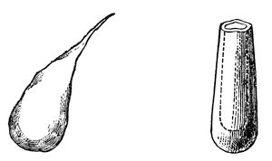
Now, I have shewn you these things for the purpose of bringing your minds to see that bodies are not merely held together by this power of cohesion, but that they are held together in very curious ways. And suppose I take some things that are held together by this force, and examine them more minutely. I will first take a bit of glass, and if I give it a blow with a hammer, I shall just break it to pieces. You saw how it was in the case of the flint when I broke the piece off; a piece of a similar kind would come off, just as you would expect; and if I were to break it up still more, it would be as you have seen, simply a collection of small particles of no definite shape or form. But supposing I take some other thing, this stone for instance (fig. 15) [taking a piece of mica], and if I hammer this stone, I may batter it a great deal before I can break it up. I may even bend it without breaking it; that is to say, I may bend it in one particular direction without breaking it much, although I feel in my hands that I am doing it some injury. But now, if I take it by the edges, I find that it breaks up into leaf after leaf in a most extraordinary manner. Why should it break up like that? Not because all stones do, or all crystals; for there is some salt (fig. 16)--you know what common salt is: here is a piece of this salt which by natural circumstances has had its particles so brought together that they have been allowed free opportunity of combining or coalescing; and you shall see what happens if I take this piece of salt and break it. It does not break as flint did, or as the mica did, but with a clean sharp angle and exact surfaces, beautiful and glittering as diamonds [breaking it by gentle blows with a hammer]; there is a square prism which I may break up into a square cube. You see these fragments are all square--one side may be longer than the other, but they will only split up so as to form square or oblong pieces with cubical sides. Now, I go a little further, and I find another stone (fig. 17) [Iceland, or calc-spar], which I may break in a similar way, but not with the same result. Here is a piece which I have broken off, and you see there are plain surfaces perfectly regular with respect to each other; but it is not cubical--it is what we call a rhomboid. It still breaks in three directions most beautifully and regularly, with polished surfaces, but with sloping sides, not like the salt. Why not? It is very manifest that this is owing to the attraction of the particles, one for the other, being less in the direction in which they give way than in other directions. I have on the table before me a number of little bits of calcareous spar, and I recommend each of you to take a piece home, and then you can take a knife and try to divide it in the direction of any of the surfaces already existing. You will be able to do it at once; but if you try to cut it across the crystals, you cannot--by hammering, you may bruise and break it up--but you can only divide it into these beautiful little rhomboids.
Editor's note: Mica.--A silicate of alumina and magnesia. It has a bright metallic lustre--hence its name, from mico, to shine.
Editor's note: Common salt, or chloride of sodium, crystallises in the form of solid cubes, which, aggregated together, form a mass, which may be broken up into the separate cubes.
Editor's note: Iceland or Calc Spar.--Native carbonate of lime in its primitive crystalline form.
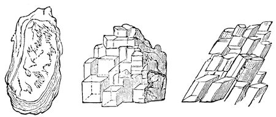
Now I want you to understand a little more how this is--and for this purpose I am going to use the electric light again. You see, we cannot look into the middle of a body like this piece of glass. We perceive the outside form, and the inside form, and we look through it; but we cannot well find out how these forms become so: and I want you, therefore, to take a lesson in the way in which we use a ray of light for the purpose of seeing what is in the interior of bodies. Light is a thing which is, so to say, attracted by every substance that gravitates (and we do not know anything that does not). All matter affects light more or less by what we may consider as a kind of attraction, and I have arranged (fig. 18) a very simple experiment upon the floor of the room for the purpose of illustrating this. I have put into that basin a few things which those who are in the body of the theatre will not be able to see, and I am going to make use of this power, which matter possesses, of attracting a ray of light. If Mr. Anderson pours some water, gently and steadily, into the basin, the water will attract the rays of light downwards, and the piece of silver and the sealing-wax will appear to rise up into the sight of those who were before not high enough to see over the side of the basin to its bottom. [Mr. Anderson here poured water into the basin, and upon the Lecturer asking whether any body could see the silver and sealing-wax, he was answered by a general affirmative.] Now, I suppose that everybody can see that they are not at all disturbed, whilst from the way they appear to have risen up, you would imagine the bottom of the basin and the articles in it were two inches thick, although they are only one of our small silver dishes and a piece of sealing-wax which I have put there. The light which now goes to you from that piece of silver was obstructed by the edge of the basin, when there was no water there, and you were unable to see anything of it; but when we poured in water, the rays were attracted down by it, over the edge of the basin, and you were thus enabled to see the articles at the bottom.
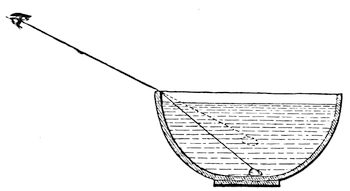
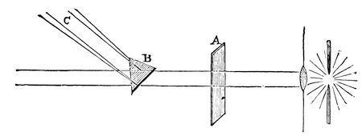
I have shewn you this experiment first, so that you might understand how glass attracts light, and might then see how other substances, like rock-salt and calcareous spar, mica, and other stones, would affect the light; and, if Dr. Tyndall will be good enough to let us use his light again, we will first of all shew you how it may be bent by a piece of glass (fig. 19). [The electric lamp was again lit, and the beam of parallel rays of light which it emitted was bent about and decomposed by means of the prism.] Now, here you see, if I send the light through this piece of plain glass, A, it goes straight through, without being bent, unless the glass be held obliquely, and then the phenomenon becomes more complicated; but if I take this piece of glass, B [a prism], you see it will shew a very different effect. It no longer goes to that wall, but it is bent to this screen, C; and how much more beautiful it is now [throwing the prismatic spectrum on the screen]. This ray of light is bent out of its course by the attraction of the glass upon it. And you see I can turn and twist the rays to and fro, in different parts of the room, just as I please. Now it goes there, now here. [The Lecturer projected the prismatic spectrum about the theatre.] Here I have the rays once more bent on to the screen, and you see how wonderfully and beautifully that piece of glass not only bends the light by virtue of its attraction, but actually splits it up into different colours. Now, I want you to understand that this piece of glass [the prism] being perfectly uniform in its internal structure, tells us about the action of these other bodies which are not uniform--which do not merely cohere, but also have within them, in different parts, different degrees of cohesion, and thus attract and bend the light with varying powers. We will now let the light pass through one or two of these things which I just now shewed you broke so curiously; and, first of all, I will take a piece of mica. Here, you see, is our ray of light. We have first to make it what we call polarised; but about that you need not trouble yourselves--it is only to make our illustration more clear. Here, then, we have our polarised ray of light, and I can so adjust it as to make the screen upon which it is shining either light or dark, although I have nothing in the course of this ray of light but what is perfectly transparent [turning the analyser round]. I will now make it so that it is quite dark; and we will, in the first instance, put a piece of common glass into the polarised ray, so as to shew you that it does not enable the light to get through. You see the screen remains dark. The glass then, internally, has no effect upon the light. [The glass was removed, and a piece of mica introduced.] Now, there is the mica which we split up so curiously into leaf after leaf, and see how that enables the light to pass through to the screen, and how, as Dr. Tyndall turns it round in his hand, you have those different colours, pink, and purple, and green, coming and going most beautifully--not that the mica is more transparent than the glass, but because of the different manner in which its particles are arranged by the force of cohesion.
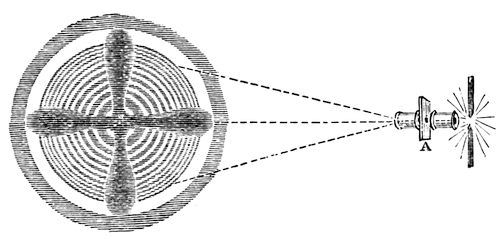
Now we will see how calcareous spar acts upon this light,--that stone which split up into rhombs, and of which you are each of you going to take a little piece home. [The mica was removed, and a piece of calc-spar introduced at A.] See how that turns the light round and round, and produces these rings and that black cross (fig. 20). Look at those colours--are they not most beautiful for you and for me?--for I enjoy these things as much as you do. In what a wonderful manner they open out to us the internal arrangement of the particles of this calcareous spar by the force of cohesion.
And now I will shew you another experiment. Here is that piece of glass which before had no action upon the light. You shall see what it will do when we apply pressure to it. Here, then, we have our ray of polarised light, and I will first of all shew you that the glass has no effect upon it in its ordinary state,--when I place it in the course of the light, the screen still remains dark. Now, Dr. Tyndall will press that bit of glass between three little points, one point against two, so as to bring a strain upon the parts, and you will see what a curious effect that has. [Upon the screen two white dots gradually appeared.] Ah! these points shew the position of the strain--in these parts the force of cohesion is being exerted in a different degree to what it is in the other parts, and hence it allows the light to pass through. How beautiful that is--how it makes the light come through some parts, and leaves it dark in others, and all because we weaken the force of cohesion between particle and particle. Whether you have this mechanical power of straining, or whether we take other means, we get the same result; and, indeed, I will shew you by another experiment that if we heat the glass in one part, it will alter its internal structure, and produce a similar effect. Here is a piece of common glass, and if I insert this in the path of the polarised ray, I believe it will do nothing. There is the common glass [introducing it]--no light passes through--the screen remains quite dark; but I am going to warm this glass in the lamp, and you know yourselves that when you pour warm water upon glass you put a strain upon it sufficient to break it sometimes--something like there was in the case of the Prince Rupert’s drops. [The glass was warmed in the spirit-lamp, and again placed across the ray of light.] Now you see how beautifully the light goes through those parts which are hot, making dark and light lines just as the crystal did, and all because of the alteration I have effected in its internal condition; for these dark and light parts are a proof of the presence of forces acting and dragging in different directions within the solid mass.
We will first return for a few minutes to one of the experiments made yesterday. You remember what we put together on that occasion--powdered alum and warm water; here is one of the basins then used. Nothing has been done to it since; but you will find on examining it, that it no longer contains any powder, but a multitude of beautiful crystals. Here also are the pieces of coke which I put into the other basin--they have a fine mass of crystals about them. That other basin I will leave as it is. I will not pour the water from it, because it will shew you that the particles of alum have done something more than merely crystallise together. They have pushed the dirty matter from them, laying it around the outside or outer edge of the lower crystals--squeezed out as it were by the strong attraction which the particles of alum have for each other.
And now for another experiment. We have already gained a knowledge of the manner in which the particles of bodies--of solid bodies--attract each other, and we have learnt that it makes calcareous spar, alum, and so forth, crystallise in these regular forms. Now, let me gradually lead your minds to a knowledge of the means we possess of making this attraction alter a little in its force; either of increasing, or diminishing, or apparently of destroying it altogether. I will take this piece of iron [a rod of iron about two feet long, and a quarter of an inch in diameter], it has at present a great deal of strength, due to its attraction of cohesion; but if Mr. Anderson will make part of this red-hot in the fire, we shall then find that it will become soft, just as sealing-wax will when heated, and we shall also find that the more it is heated the softer it becomes. Ah! but what does soft mean? Why, that the attraction between the particles is so weakened that it is no longer sufficient to resist the power we bring to bear upon it. [Mr. Anderson handed to the Lecturer the iron rod, with one end red-hot, which he shewed could be easily twisted about with a pair of pliers.] You see, I now find no difficulty in bending this end about as I like; whereas I cannot bend the cold part at all. And you know how the smith takes a piece of iron and heats it, in order to render it soft for his purpose: he acts upon our principle of lessening the adhesion of the particles, although he is not exactly acquainted with the terms by which we express it.
And now we have another point to examine; and this water is again a very good substance to take as an illustration (as philosophers we call it all water, even though it be in the form of ice or steam). Why is this water hard? [pointing to a block of ice] because the attraction of the particles to each other is sufficient to make them retain their places in opposition to force applied to it. But what happens when we make the ice warm? Why, in that case we diminish to such a large extent the power of attraction that the solid substance is destroyed altogether. Let me illustrate this: I will take a red-hot ball of iron [Mr. Anderson, by means of a pair of tongs, handed to the Lecturer a red-hot ball of iron, about two inches in diameter], because it will serve as a convenient source of heat [placing the red-hot iron in the centre of the block of ice]. You see I am now melting the ice where the iron touches it. You see the iron sinking into it, and while part of the solid water is becoming liquid, the heat of the ball is rapidly going off. A certain part of the water is actually rising in steam--the attraction of some of the particles is so much diminished that they cannot even hold together in the liquid form, but escape as vapour. At the same time, you see I cannot melt all this ice by the heat contained in this ball. In the course of a very short time I shall find it will have become quite cold.
Here is the water which we have produced by destroying some of the attraction which existed between the particles of the ice,--for below a certain temperature the particles of water increase in their mutual attraction, and become ice; and above a certain temperature the attraction decreases, and the water becomes steam. And exactly the same thing happens with platinum, and nearly every substance in nature; if the temperature is increased to a certain point, it becomes liquid, and a further increase converts it into a gas. Is it not a glorious thing for us to look at the sea, the rivers, and so forth, and to know that this same body in the northern regions is all solid ice and icebergs, while here, in a warmer climate, it has its attraction of cohesion so much diminished as to be liquid water. Well, in diminishing this force of attraction between the particles of ice, we made use of another force, namely, that of heat; and I want you now to understand that this force of heat is always concerned when water passes from the solid to the liquid state. If I melt ice in other ways, I cannot do without heat (for we have the means of making ice liquid without heat; that is to say, without using heat as a direct cause). Suppose, for illustration, I make a vessel out of this piece of tinfoil [bending the foil up into the shape of a dish]. I am making it metallic, because I want the heat which I am about to deal with to pass readily through it; and I am going to pour a little water on this board, and then place the tin vessel on it. Now if I put some of this ice into the metal dish, and then proceed to make it liquid by any of the various means we have at our command, it still must take the necessary quantity of heat from something, and in this case it will take the heat from the tray, and from the water underneath, and from the other things round about. Well, a little salt added to the ice has the power of causing it to melt, and we shall very shortly see the mixture become quite fluid, and you will then find that the water beneath will be frozen--frozen, because it has been forced to give up that heat which is necessary to keep it in the liquid state, to the ice on becoming liquid. I remember once, when I was a boy, hearing of a trick in a country alehouse; the point was how to melt ice in a quart-pot by the fire, and freeze it to the stool. Well, the way they did it was this: they put some pounded ice in a pewter pot and added some salt to it, and the consequence was, that when the salt was mixed with it, the ice in the pot melted (they did not tell me anything about the salt, and they set the pot by the fire, just to make the result more mysterious), and in a short time the pot and the stool were frozen together, as we shall very shortly find it to be the case here. And all because salt has the power of lessening the attraction between the particles of ice. Here you see the tin dish is frozen to the board--I can even lift this little stool up by it.
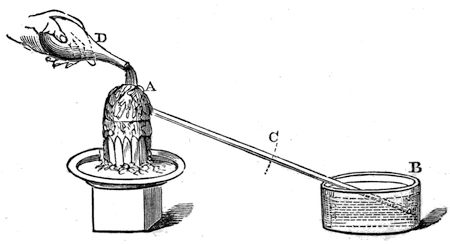
This experiment cannot, I think, fail to impress upon your minds the fact, that whenever a solid body loses some of that force of attraction by means of which it remains solid, heat is absorbed; and if, on the other hand, we convert a liquid into a solid, e.g., water into ice, a corresponding amount of heat is given out. I have an experiment shewing this to be the case. Here (fig. 21) is a bulb, A, filled with air, the tube from which dips into some coloured liquid in the vessel B. And I dare say you know that if I put my hand on the bulb A, and warm it, the coloured liquid which is now standing in the tube at C will travel forward. Now we have discovered a means, by great care and research into the properties of various bodies, of preparing a solution of a salt which, if shaken or disturbed, will at once become a solid; and as I explained to you just now (for what is true of water is true of every other liquid), by reason of its becoming solid, heat is evolved, and I can make this evident to you by pouring it over this bulb;--there! it is becoming solid, and look at the coloured liquid, how it is being driven down the tube, and how it is bubbling out through the water at the end; and so we learn this beautiful law of our philosophy, that whenever we diminish the attraction of cohesion, we absorb heat--and whenever we increase that attraction, heat is evolved. This, then, is a great step in advance, for you have learned a great deal in addition to the mere circumstance that particles attract each other. But you must not now suppose that because they are liquid they have lost their attraction of cohesion; for here is the fluid mercury, and if I pour it from one vessel into another, I find that it will form a stream from the bottle down to the glass--a continuous rod of fluid mercury, the particles of which have attraction sufficient to make them hold together all the way through the air down to the glass itself; and if I pour water quietly from a jug, I can cause it to run in a continuous stream in the same manner. Again, let me put a little water on this piece of plate-glass, and then take another plate of glass and put it on the water; there! the upper plate is quite free to move, gliding about on the lower one from side to side; and yet, if I take hold of the upper plate and lift it up straight, the cohesion is so great that the lower one is held up by it. See how it runs about as I move the upper one! and this is all owing to the strong attraction of the particles of the water. Let me shew you another experiment. If I take a little soap and water--not that the soap makes the particles of the water more adhesive one for the other but it certainly has the power of continuing in a better manner the attraction of the particles (and let me advise you, when about to experiment with soap-bubbles, to take care to have everything clean and soapy). I will now blow a bubble; and that I may be able to talk and blow a bubble too, I will take a plate with a little of the soapsuds in it, and will just soap the edges of the pipe, and blow a bubble on to the plate. Now, there is our bubble. Why does it hold together in this manner? Why, because the water of which it is composed has an attraction of particle for particle,--so great, indeed, that it gives to this bubble the very power of an india-rubber ball; for you see, if I introduce one end of this glass tube into the bubble, that it has the power of contracting so powerfully as to force enough air through the tube to blow out a light (fig. 22)--the light is blown out. And look! see how the bubble is disappearing, see how it is getting smaller and smaller.
Editor's note: Solution of a Salt.--Acetate of soda. A solution saturated, or nearly so, at the boiling point, is necessary, and it must be allowed to cool, and remain at rest until the experiment is made.
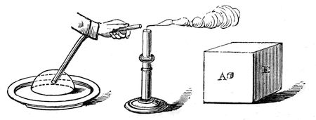
There are twenty other experiments I might shew you to illustrate this power of cohesion of the particles of liquids. For instance, what would you propose to me if, having lost the stopper out of this alcohol bottle, I should want to close it speedily with something near at hand. Well, a bit of paper would not do, but a piece of linen cloth would, or some of this cotton wool which I have here. I will put a tuft of it into the neck of the alcohol bottle, and you see, when I turn it upside down, that it is perfectly well stoppered, so far as the alcohol is concerned; the air can pass through, but the alcohol cannot. And if I were to take an oil vessel, this plan would do equally well, for in former times they used to send us oil from Italy in flasks stoppered only with cotton wool (at the present time the cotton is put in after the oil has arrived here, but formerly it used to be sent so stoppered). Now, if it were not for the particles of liquid cohering together, this alcohol would run out; and if I had time, I could have shewn you a vessel with the top, bottom, and sides altogether formed like a sieve, and yet it would hold water, owing to this cohesion.
You have now seen that the solid water can become fluid by the addition of heat, owing to this lessening the attractive force between its particles, and yet you see that there is a good deal of attractive force remaining behind. I want now to take you another step beyond. We saw that if we continued applying heat to the water (as indeed happened with our piece of ice here), that we did at last break up that attraction which holds the liquid together; and I am about to take some ether (any other liquid would do, but ether makes a better experiment for my purpose), in order to illustrate what will happen when this cohesion is broken up. Now, this liquid ether, if exposed to a very low temperature, will become a solid; but if we apply heat to it, it becomes vapour, and I want to shew you the enormous bulk of the substance in this new form--when we make ice into water, we lessen its bulk, but when we convert water into steam, we increase it to an enormous extent. You see it is very clear that as I apply heat to the liquid I diminish its attraction of cohesion--it is now boiling, and I will set fire to the vapour, so that you may be enabled to judge of the space occupied by the ether in this form by the size of its flame, and you now see what an enormously bulky flame I get from that small volume of ether below. The heat from the spirit-lamp is now being consumed, not in making the ether any warmer, but in converting it into vapour; and if I desired to catch this vapour and condense it (as I could without much difficulty), I should have to do the same as if I wished to convert steam into water and water into ice: in either case it would be necessary to increase the attraction of the particles, by cold or otherwise. So largely is the bulk occupied by the particles increased by giving them this diminished attraction, that if I were to take a portion of water a cubic inch in bulk (A, fig. 23) I should produce a volume of steam of that size, B [1700 cubic inches; nearly a cubic foot], so greatly is the attraction of cohesion diminished by heat; and yet it still remains water. You can easily imagine the consequences which are due to this change in volume by heat--the mighty powers of steam and the tremendous explosions which are sometimes produced by this force of water. I want you now to see another experiment, which will perhaps give you a better illustration of the bulk occupied by a body when in the state of vapour. Here is a substance which we call iodine, and I am about to submit this solid body to the same kind of condition as regards heat that I did the water and the ether [putting a few grains of iodine into a hot glass globe, which immediately became filled with the violet vapour], and you see the same kind of change produced. Moreover, it gives us the opportunity of observing how beautiful is the violet-coloured vapour from this black substance, or rather the mixture of the vapour with air (for I would not wish you to understand that this globe is entirely filled with the vapour of iodine).
If I had taken mercury and converted it into vapour (as I could easily do), I should have a perfectly colourless vapour; for you must understand this about vapours, that bodies in what we call the vaporous, or the gaseous state, are always perfectly transparent, never cloudy or smoky: they are, however, often coloured, and we can frequently have coloured vapours or gases produced by colourless particles themselves mixing together, as in this case [the Lecturer here inverted a glass cylinder full of binoxide of nitrogen over a cylinder of oxygen, when the dark-red vapour of hypo-nitrous acid was produced]. Here also you see a very excellent illustration of the effect of a power of nature which we have not as yet come to, but which stands next on our list--CHEMICAL AFFINITY. And thus you see we can have a violet vapour or an orange vapour, and different other kinds of vapour; but they are always perfectly transparent, or else they would cease to be vapours.
Editor's note: Binoxide of Nitrogen and Hypo-nitrous Acid.--Binoxide of nitrogen is formed when nitric acid and a little water are added to some copper turnings. It produces deep red fumes as soon as it comes in contact with the air, by combining with the oxygen of the latter to form hypo-nitrous acid. Binoxide of nitrogen is composed of two parts oxygen and one part of nitrogen; hypo-nitrous acid is composed of one part of nitrogen and three parts of oxygen.
I am now going to lead you a step beyond this consideration of the attraction of the particles for each other. You see we have come to understand that, if we take water as an illustration, whether it be ice, or water, or steam, it is always to be considered by us as water. Well, now prepare your minds to go a little deeper into the subject. We have means of searching into the constitution of water beyond any that are afforded us by the action of heat, and among these one of the most important is that force which we call voltaic electricity, which we used at our last meeting for the purpose of obtaining light, and which we carried about the room by means of these wires. This force is produced by the battery behind me, to which, however, I will not now refer more particularly: before we have done we shall know more about this battery, but it must grow up in our knowledge as we proceed. Now, here (fig. 24) is a portion of water in this little vessel C, and besides the water there are two plates of the metal platinum, which are connected with the wires (A and B) coming outside, and I want to examine that water, and the state and the condition in which its particles are arranged. If I were to apply heat to it, you know what we should get; it would assume the state of vapour, but it would nevertheless remain water, and would return to the liquid state as soon as the heat was removed. Now, by means of these wires (which are connected with the battery behind me, and come under the floor and up through the table), we shall have a certain amount of this new power at our disposal. Here you see it is [causing the ends of the wires to touch]--that is the electric light we used yesterday, and by means of these wires we can cause water to submit itself to this power; for the moment I put them into metallic connection (at A and B), you see the water boiling in that little vessel (C), and you hear the bubbling of the gas that is going through the tube (D). See how I am converting the water into vapour; and if I take a little vessel (E), and fill it with water, and put it in the trough over the end of the tube (D), there goes the vapour ascending into the vessel. And yet that is not steam; for you know that if steam is brought near cold water, it would at once condense, and return back again to water. This then cannot be steam, for it is bubbling through the cold water in this trough; but it is a vaporous substance, and we must therefore examine it carefully, to see in what way the water has been changed. And now, in order to give you a proof that it is not steam, I am going to shew you that it is combustible; for if I take this small vessel to a light, the vapour inside explodes in a manner that steam could never do.
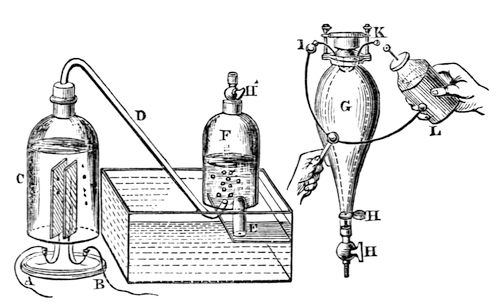
I will now fill this large bell-jar (F) with water; and I propose letting the gas ascend into it, and I will then shew you that we can reproduce the water back again from the vapour or air that is there. Here is a strong glass vessel (G), and into it we will let the gas (from F) pass. We will there fire it by the electric spark, and then after the explosion you will find that we have got the water back again: it will not be much, however, for you will recollect that I shewed you how small a portion of water produced a very large volume of vapour. Mr. Anderson will now pump all the air out of this vessel (G); and when I have screwed it on to the top of our jar of gas (F), you will see upon opening the stop-cocks (H′ H H) the water will jump up, shewing that some of the gas has passed into the glass vessel. I will now shut these stop-cocks, and we shall be able to send the electric spark through the gas by means of the wires (I, K) in the upper part of the vessel, and you will see it burn with a most intense flash. [Mr. Anderson here brought a Leyden jar, which he discharged through the confined gas by means of the wires I, K.] You saw the flash; and now that you may see that there is no longer any gas remaining, if I place it over the jar and open the stop-cocks again, up will go the gas, and we can have a second combustion; and so I might go on again and again, and I should continue to accumulate more and more of the water to which the gas has returned. Now, is not this curious?--in this vessel (C) we can go on making from water a large bulk of permanent gas, as we call it, and then we can reconvert it into water in this way. [Mr. Anderson brought in another Leyden jar, which, however, from some cause would not ignite the gas. It was therefore recharged, when the explosion took place in the desired manner.] How beautifully we get our results when we are right in our proceedings!--it is not that Nature is wrong when we make a mistake. Now, I will lay this vessel (G) down by my right hand, and you can examine it by and by: there is not very much water flowing down, but there is quite sufficient for you to see.
Another wonderful thing about this mode of changing the condition of the water is this--that we are able to get the separate parts of which it is composed, at a distance the one from the other, and to examine them, and see what they are like, and how many of them there are; and for this purpose I have here some more water in a slightly different apparatus to the former one (fig. 25), and if I place this in connection with the wires of the battery (at A B), I shall get a similar decomposition of the water at the two platinum plates. Now, I will put this little tube (O) over there, and that will collect the gas together that comes from this side (A), and this tube (H) will collect the gas that comes from the other side (B); and I think we shall soon be able to see a difference. In this apparatus the wires are a good way apart from each other, and it now seems that each of them is capable of drawing off particles from the water and sending them off, and you see that one set of particles (H) is coming off twice as fast as those collected in the other tube (O). Something is coming out of the water there (at H) which burns [setting fire to the gas]; but what comes out of the water here (at O), although it will not burn, will support combustion very vigorously. [The Lecturer here placed a match with a glowing tip in the gas, when it immediately rekindled.]
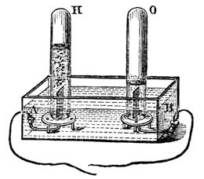
Here, then, we have two things, neither of them being water alone, but which we get out of the water. Water is therefore composed of two substances different to itself, which appear at separate places when it is made to submit to the force which I have in these wires; and if I take an inverted tube of water and collect this gas (H), you will see that it is by no means the same as the one we collected in the former apparatus (fig. 24). That exploded with a loud noise when it was lighted, but this will burn quite noiselessly--it is called hydrogen; and the other we call oxygen--that gas which so beautifully brightens up all combustion, but does not burn of itself. So now we see that water consists of two kinds of particles attracting each other in a very different manner to the attraction of gravitation or cohesion; and this new attraction we call chemical affinity, or the force of chemical action between different bodies. We are now no longer concerned with the attraction of iron for iron, water for water, wood for wood, or like bodies for each other, as we were when dealing with the force of cohesion: we are dealing with another kind of attraction,--the attraction between particles of a different nature one to the other. Chemical affinity depends entirely upon the energy with which particles of different kinds attract each other. Oxygen and hydrogen are particles of different kinds, and it is their attraction to each other which makes them chemically combine and produce water.
I must now shew you a little more at large what chemical affinity is. I can prepare these gases from other substances, as well as from water; and we will now prepare some oxygen. Here is another substance which contains oxygen--chlorate of potash. I will put some of it into this glass retort, and Mr. Anderson will apply heat to it. We have here different jars filled with water; and when, by the application of heat, the chlorate of potash is decomposed, we will displace the water, and fill the jars with gas.
Now, when water is opened out in this way by means of the battery--which adds nothing to it materially, which takes nothing from it materially (I mean no matter; I am not speaking of force), which adds no matter to the water--it is changed in this way: the gas which you saw burning a little while ago, called hydrogen, is evolved in large quantity, and the other gas, oxygen, is evolved in only half the quantity; so that these two areas represent water, and these are always the proportions between the two gases.
+-----------+-----------+ | | | | | 8 | | | | Oxygen, 88.9 | | Oxygen. | | 1 | | Hydrogen, 11.1 | +-----------+ ---- | Hydrogen. | Water, 100.0 | | 9 | | | | | | +-----------+
But oxygen is sixteen times the weight of the other--eight times as heavy as the particles of hydrogen in the water; and you therefore know that water is composed of nine parts by weight--one of hydrogen and eight of oxygen; thus:--
Hydrogen, 46.2 cubic inches, = 1 grain. Oxygen, 23.1 cubic inches, = 8 grains. ---- -- Water (steam), 69.3 cubic inches, = 9 grains.
Now, Mr. Anderson has prepared some oxygen, and we will proceed to examine what is the character of this gas. First of all, you remember, I told you that it does not burn, but that it affects the burning of other bodies. I will just set fire to the point of this little bit of wood, and then plunge it into the jar of oxygen, and you will see what this gas does in increasing the brilliancy of the combustion. It does not burn--it does not take fire as the hydrogen would--but how vividly the combustion of the match goes on. Again, if I were to take this wax taper and light it, and turn it upside down in the air, it would in all probability put itself out, owing to the wax running down into the wick. [The Lecturer here turned the lighted taper upside down, when in a few seconds it went out.] Now, that will not happen in oxygen gas; you will see how differently it acts (fig. 26). [The taper was again lighted, turned upside down, and then introduced into a jar of oxygen.] Look at that! see how the very wax itself burns, and falls down in a dazzling stream of fire, so powerfully does the oxygen support combustion. Again, here is another experiment which will serve to illustrate the force, if I may so call it, of oxygen. I have here a circular flame of spirit of wine, and with it I am about to shew you the way in which iron burns, because it will serve very well as a comparison between the effect produced by air and oxygen. If I take this ring flame, I can shake by means of a sieve the fine particles of iron filings through it, and you will see the way in which they burn. [The Lecturer here shook through the flame some iron filings, which took fire and fell through with beautiful scintillations.] But if I now hold the flame over a jar of oxygen [the experiment was repeated over a jar of oxygen, when the combustion of the filings, as they fell into the oxygen, became almost insupportably brilliant], you see how wonderfully different the effect is in the jar; because there we have oxygen instead of common air.
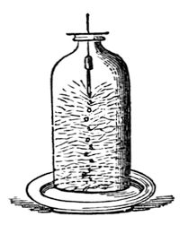
We shall have to pay a little more attention to the forces existing in water before we can have a clear idea on the subject. Besides the attraction which there is between its particles to make it hold together as a liquid or a solid, there is also another force, different from the former--one which, yesterday, by means of the voltaic battery, we overcame, drawing from the water two different substances--which, when heated by means of the electric spark, attracted each other, and rushed into combination to reproduce water. Now, I propose to-day to continue this subject, and trace the various phenomena of chemical affinity; and for this purpose, as we yesterday considered the character of oxygen, of which I have here two jars (oxygen being those particles derived from the water which enable other bodies to burn), we will now consider the other constituent of water; and, without embarrassing you too much with the way in which these things are made, I will proceed now to shew you our common way of making hydrogen. (I called it hydrogen yesterday--it is so called because it helps to generate water.)[A] I put into this retort some zinc, water, and oil of vitriol, and immediately an action takes place, which produces an abundant evolution of gas, now coming over into this jar, and bubbling up in appearance exactly like the oxygen we obtained yesterday.
[A] ὕδωρ, “water,” and γενναω, “I generate.”
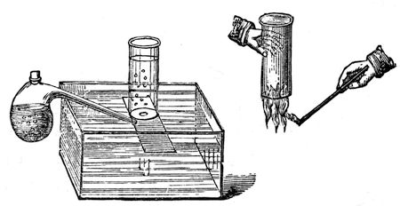
The processes, you see, are very different, though the result is the same, in so far as it gives us certain gaseous particles. Here, then, is the hydrogen. I shewed you yesterday certain qualities of this gas; now let me exhibit you some other properties. Unlike oxygen, which is a supporter of combustion, and will not burn, hydrogen itself is combustible. There is a jar full of it; and if I carry it along in this manner, and put a light to it, I think you will see it take fire, not with a bright light--you will at all events hear it, if you do not see it. Now, that is a body entirely different from oxygen: it is extremely light; for although yesterday you saw twice as much of this hydrogen produced on the one side as on the other, by the voltaic battery, it was only one-eighth the weight of the oxygen. I carry this jar upside-down. Why? Because I know that it is a very light body, and that it will continue in this jar upside-down quite as effectually as the water will in that jar which is not upside-down; and just as I can pour water from one vessel into another in the right position to receive it, so can I pour this gas from one jar into another when they are upside-down. See what I am about to do. There is no hydrogen in this jar at present, but I will gently turn this jar of hydrogen up under this other jar (fig. 28), and then we will examine the two. We shall see, on applying a light, that the hydrogen has left the jar in which it was at first, and has poured upwards into the other, and there we shall find it.
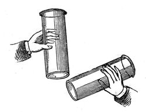
You now understand that we can have particles of very different kinds, and that they can have different bulks and weights; and there are two or three very interesting experiments which serve to illustrate this. For instance, if I blow soap bubbles with the breath from my mouth, you will see them fall, because I fill them with common air, and the water which forms the bubble carries it down. But now, if I inhale hydrogen gas into my lungs (it does no harm to the lungs, although it does no good to them), see what happens. [The Lecturer inhaled some hydrogen, and after one or two ineffectual attempts, succeeded in blowing a splendid bubble, which rose majestically and slowly to the ceiling of the theatre, where it burst.] That shews you very well how light a substance this is; for, notwithstanding all the heavy bad air from my lungs, and the weight of the bubble, you saw how it was carried up. I want you now to consider this phenomenon of weight as indicating how exceedingly different particles are one from the other; and I will take as illustrations these very common things--air, water, the heaviest body, platinum, and this gas: and observe how they differ in this respect; for if I take a piece of platinum of that size (fig. 29), it is equal to the weight of portions of water, air, and hydrogen of the bulks I have represented in these spheres. And this illustration gives you a very good idea of the extraordinary difference with regard to the gravity of the articles having this enormous difference in bulk. [The following tabular statement having reference to this illustration appeared on the diagram board.]
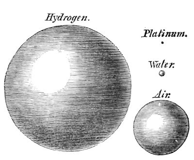
+------------+----------+-------+------+ | Hydrogen, | 1 | | | +------------+----------+-------+------+ | Air, | 14.4 | 1 | | +------------+----------+-------+------+ | Water, | 11943 | 829 | 1 | +------------+----------+-------+------+ | Platinum, | 256774 | 17831 | 21.5 | +------------+----------+-------+------+
Whenever oxygen and hydrogen unite together they produce water; and you have seen the extraordinary difference between the bulk and appearance of the water so produced, and the particles of which it consists chemically. Now, we have never yet been able to reduce either oxygen or hydrogen to the liquid state; and yet their first impulse, when chemically combined, is to take up first this liquid condition, and then the solid condition. We never combine these different particles together without producing water; and it is curious to think how often you must have made the experiment of combining oxygen and hydrogen to form water without knowing it. Take a candle, for instance, and a clean silver spoon (or a piece of clean tin will do), and if you hold it over the flame, you immediately cover it with dew--not a smoke--which presently evaporates. This perhaps will serve to shew it better. Mr. Anderson will put a candle under that jar, and you will see how soon the water is produced (fig. 30). Look at that dimness on the sides of the glass, which will soon produce drops, and trickle down into the plate. Well, that dimness and these drops are water, formed by the union of the oxygen of the air with the hydrogen existing in the wax of which that candle is formed.
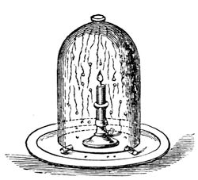
And now, having brought you in the first place to the consideration of chemical attraction, I must enlarge your ideas so as to include all substances which have this attraction for each other--for it changes the character of bodies, and alters them in this way and that way in the most extraordinary manner, and produces other phenomena wonderful to think about. Here is some chlorate of potash, and there some sulphuret of antimony. We will mix these two different sets of particles together; and I want to shew you in a general sort of way some of the phenomena which take place when we make different particles act together. Now, I can make these bodies act upon each other in several ways. In this case I am going to apply heat to the mixture; but if I were to give a blow with a hammer, the same result would follow. [A lighted match was brought to the mixture, which immediately exploded with a sudden flash, evolving a dense white smoke.] There you see the result of the action of chemical affinity overcoming the attraction of cohesion of the particles. Again, here is a little sugar, quite a different substance from the black sulphuret of antimony, and you shall see what takes place when we put the two together. [The mixture was touched with sulphuric acid, when it took fire and burnt gradually, and with a brighter flame than in the former instance.] Observe this chemical affinity travelling about the mass, and setting it on fire, and throwing it into such wonderful agitation!
Editor's note: Chlorate of Potash and Sulphuret of Antimony.--Great care must be taken in mixing these substances, as the mixture is dangerously explosive. They must be powdered separately, and mixed together with a feather on a sheet of paper, or by passing them several times through a small sieve.
Editor's note: The mixture of chlorate of potash and sugar does not require the same precautions. They may be rubbed together in a pestle and mortar without fear. One part of chlorate of potash and three parts of sugar will answer. The mixture need only be touched with a glass rod dipped in oil of vitriol.
I must now come to a few circumstances which require careful consideration. We have already examined one of the effects of this chemical affinity; but to make the matter more clear we must point out some others. And here are two salts dissolved in water. They are both colourless solutions, and in these glasses you cannot see any difference between them. But if I mix them, I shall have chemical attraction take place. I will pour the two together into this glass, and you will at once see, I have no doubt, a certain amount of change. Look, they are already becoming milky, but they are sluggish in their action--not quick as the others were--for we have endless varieties of rapidity in chemical action. Now, if I mix them together, and stir them, so as to bring them properly together, you will soon see what a different result is produced. As I mix them, they get thicker and thicker, and you see the liquid is hardening and stiffening, and before long I shall have it quite hard; and before the end of the lecture it will be a solid stone--a wet stone, no doubt, but more or less solid--in consequence of the chemical affinity. Is not this changing two liquids into a solid body a wonderful manifestation of chemical affinity?
Editor's note: Two Salts Dissolved in Water.--Sulphate of soda and chloride of calcium. The solutions must be saturated for the experiment to succeed well.
There is another remarkable circumstance in chemical affinity, which is, that it is capable of either waiting or acting at once. And this is very singular, because we know of nothing of the kind in the forces either of gravitation or cohesion. For instance, here are some oxygen particles, and here is a lump of carbon particles. I am going to put the carbon particles into the oxygen; they can act, but they do not--they are just like this unlighted candle. It stands here quietly on the table, waiting until we want to light it. But it is not so in this other case. Here is a substance, gaseous like the oxygen, and if I put these particles of metal into it, the two combine at once. The copper and the chlorine unite by their power of chemical affinity, and produce a body entirely unlike either of the substances used. And in this other case, it is not that there is any deficiency of affinity between the carbon and oxygen; for the moment I choose to put them in a condition to exert their affinity, you will see the difference. [The piece of charcoal was ignited, and introduced into the jar of oxygen, when the combustion proceeded with vivid scintillations.]
Now, this chemical action is set going exactly as it would be if I had lighted the candle, or as it is when the servant puts coals on and lights the fire: the substances wait until we do something which is able to start the action. Can anything be more beautiful than this combustion of charcoal in oxygen? You must understand that each of these little sparks is a portion of the charcoal, or the bark of the charcoal, thrown off white-hot into the oxygen, and burning in it most brilliantly, as you see. And now let me tell you another thing, or you will go away with a very imperfect notion of the powers and effects of this affinity. There you see some charcoal burning in oxygen. Well, a piece of lead will burn in oxygen just as well as the charcoal does, or indeed better; for absolutely that piece of lead will act at once upon the oxygen as the copper did in the other vessel with regard to the chlorine. And here also a piece of iron: if I light it and put it into the oxygen, it will burn away just as the carbon did. And I will take some lead, and shew you that it will burn in the common atmospheric oxygen at the ordinary temperature. These are the lumps of lead which, you remember, we had the other day--the two pieces which clung together. Now these pieces, if I take them to-day and press them together, will not stick; and the reason is, that they have attracted from the atmosphere a part of the oxygen there present, and have become coated as with a varnish by the oxide of lead, which is formed on the surface by a real process of combustion or combination. There you see the iron burning very well in oxygen; and I will tell you the reason why those scissors and that lead do not take fire whilst they are lying on the table. Here the lead is in a lump, and the coating of oxide remains on its surface; whilst there you see the melted oxide is clearing itself off from the iron, and allowing more and more to go on burning. In this case, however [holding up a small glass tube containing lead pyrophorus.], the lead has been very carefully produced in fine powder, and put into a glass tube, and hermetically sealed, so as to preserve it; and I expect you will see it take fire at once. This has been made about a month ago, and has thus had time enough to sink down to its normal temperature. What you see, therefore, is the result of chemical affinity alone. [The tube was broken at the end, and the lead poured out on to a piece of paper, whereupon it immediately took fire.] Look, look at the lead burning; why, it has set fire to the paper! Now, that is nothing more than the common affinity always existing between very clean lead and the atmospheric oxygen; and the reason why this iron does not burn until it is made red-hot is, because it has got a coating of oxide about it, which stops the action of the oxygen--putting a varnish, as it were, upon its surface, as we varnish a picture, absolutely forming a substance which prevents the natural chemical affinity between the bodies from acting.
Editor's note: Lead Pyrophorous.--This is a tartrate of lead which has been heated in a glass tube to dull redness as long as vapours are emitted. As soon as they cease to be evolved, the end of the tube is sealed, and it is allowed to cool.
I must now take you a little further in this kind of illustration--or consideration, I would rather call it--of chemical affinity. This attraction between different particles exists also most curiously in cases where they are previously combined with other substances. Here is a little chlorate of potash, containing the oxygen which we found yesterday could be procured from it. It contains the oxygen there combined and held down by its chemical affinity with other things; but still it can combine with sugar, as you saw. This affinity can thus act across substances; and I want you to see how curiously what we call combustion acts with respect to this force of chemical affinity. If I take a piece of phosphorus and set fire to it, and then place a jar of air over the phosphorus, you see the combustion which we are having there on account of chemical affinity (combustion being in all cases the result of chemical affinity). The phosphorus is escaping in that vapour, which will condense into a snow-like mass at the close of the lecture. But suppose I limit the atmosphere, what then? why, even the phosphorus will go out. Here is a piece of camphor, which will burn very well in the atmosphere, and even on water it will float about and burn, by reason of some of its particles gaining access to the air. But if I limit the quantity of air by placing a jar over it, as I am now doing, you will soon find the camphor will go out. Well, why does it go out? Not for want of air, for there is plenty of air remaining in the jar. Perhaps you will be shrewd enough to say, for want of oxygen.
This, therefore, leads us to the inquiry as to whether oxygen can do more than a certain amount of work. The oxygen there (fig. 30) cannot go on burning an unlimited quantity of candle, for that has gone out, as you see; and its amount of chemical attraction or affinity is just as strikingly limited: it can no more be fallen short of or exceeded than can the attraction of gravitation. You might as soon attempt to destroy gravitation, or weight, or all things that exist, as to destroy the exact amount of force exerted by this oxygen. And when I pointed out to you that 8 by weight of oxygen to 1 by weight of hydrogen went to form water, I meant this, that neither of them would combine in different proportions with the other; for you cannot get 10 of hydrogen to combine with 6 of oxygen, or 10 of oxygen to combine with 6 of hydrogen--it must be 8 of oxygen and 1 of hydrogen. Now, suppose I limit the action in this way: this piece of cotton wool burns, as you see, very well in the atmosphere; and I have known of cases of cotton-mills being fired as if with gunpowder, through the very finely-divided particles of cotton being diffused through the atmosphere in the mill, when it has sometimes happened that a flame has caught these raised particles, and it has run from one end of the mill to the other, and blown it up. That, then, is on account of the affinity which the cotton has for the oxygen; but suppose I set fire to this piece of cotton, which is rolled up tightly, it does not go on burning, because I have limited the supply of oxygen, and the inside is prevented from having access to the oxygen, just as it was in the case of the lead by the oxide. But here is some cotton which has been imbued with oxygen in a certain manner. I need not trouble you now with the way it is prepared; it is called gun-cotton. See how that burns [setting fire to a piece]; it is very different from the other, because the oxygen that must be present in its proper amount is put there beforehand. And I have here some pieces of paper which are prepared like the gun-cotton, and imbued with bodies containing oxygen. Here is some which has been soaked in nitrate of strontia--you will see the beautiful red colour of its flame; and here is another which I think contains baryta, which gives that fine green light; and I have here some more which has been soaked in nitrate of copper--it does not burn quite so brightly, but still very beautifully. In all these cases the combustion goes on independent of the oxygen of the atmosphere. And here we have some gunpowder put into a case, in order to shew that it is capable of burning under water. You know that we put it into a gun, shutting off the atmosphere, with shot, and yet the oxygen which it contains supplies the particles with that without which chemical action could not proceed. Now, I have a vessel of water here, and am going to make the experiment of putting this fuse under the water, and you will see whether that water can extinguish it. Here it is burning out of the water, and there it is burning under the water; and so it will continue until exhausted, and all by reason of the requisite amount of oxygen being contained within the substance. It is by this kind of attraction of the different particles one to the other that we are enabled to trace the laws of chemical affinity, and the wonderful variety of the exertions of these laws.
Editor's note: Gun-Cotton is made by immersing cotton-wool in a mixture of sulphuric acid and the strongest nitric acid, or of sulphuric acid and nitrate of potash.
Editor's note: Paper Prepared like Gun-Cotton.--It should be bibulous paper, and must be soaked for ten minutes in a mixture of ten parts by measure of oil of vitriol with five parts of strong fuming nitric acid. The paper must afterwards be thoroughly washed with warm distilled water, and then carefully dried at a gentle heat. The paper is then saturated with chlorate of strontia, or chlorate of baryta, or nitrate of copper, by immersion in a warm solution of these salts. (See Chemical News, Vol. I., page 36.)
Now, I want you to observe that one great exertion of this power, which is known as chemical affinity, is to produce HEAT and light. You know, as a matter of fact, no doubt, that when bodies burn they give out heat; but it is a curious thing that this heat does not continue--the heat goes away as soon as the action stops, and you see thereby that it depends upon the action during the time it is going on. It is not so with gravitation: this force is continuous, and is just as effective in making that lead press on the table as it was when it first fell there. Nothing occurs there which disappears when the action of falling is over; the pressure is upon the table, and will remain there until the lead is removed; whereas, in the action of chemical affinity to give light and heat, they go away immediately the action is over. This lamp seems to evolve heat and light continuously; but it is owing to a constant stream of air coming into it on all sides, and this work of producing light and heat by chemical affinity will subside as soon as the stream of air is interrupted. What, then, is this curious condition of heat? Why is the evolution of another power of matter, of a power new to us, and which we must consider as if it were now for the very first time brought under our notice? What is heat? We recognise heat by its power of liquefying solid bodies and vaporising liquid bodies, by its power of setting in action, and very often overcoming, chemical affinity. Then, how do we obtain heat? We obtain it in various ways--most abundantly by means of the chemical affinity we have just before been speaking about; but we can also obtain it in many other ways. Friction will produce heat. The Indians rub pieces of wood together until they make them hot enough to take fire; and such things have been known as two branches of a tree rubbing together so hard as to set the tree on fire. I do not suppose I shall set these two pieces of wood on fire by friction; but I can readily produce heat enough to ignite some phosphorus. [The Lecturer here rubbed two pieces of cedar-wood strongly against each other for a minute, and then placed on them a piece of phosphorus, which immediately took fire.] And if you take a smooth metal button stuck on a cork, and rub it on a piece of soft deal wood, you will make it so hot as to scorch wood and paper, and burn a match.
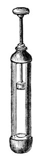
I am now going to shew you that we can obtain heat, not by chemical affinity alone, but by the pressure of air. Suppose I take a pellet of cotton and moisten it with a little ether, and put it into a glass tube (fig. 31), and then take a piston and press it down suddenly, I expect I shall be able to burn a little of that ether in the vessel. It wants a suddenness of pressure, or we shall not do what we require. [The piston was forcibly pressed down, when a flame, due to the combustion of the ether, was visible in the lower part of the syringe.] All we want is to get a little ether in vapour, and give fresh air each time, and so we may go on again and again getting heat enough by the compression of air to fire the ether-vapour.
This, then, I think, will be sufficient, accompanied with all you have previously seen, to shew you how we procure heat. And now for the effects of this power. We need not consider many of them on the present occasion, because when you have seen its power of changing ice into water and water into steam, you have seen the two principal results of the application of heat. I want you now to see how it expands all bodies--all bodies but one, and that under limited circumstances. Mr. Anderson will hold a lamp under that retort, and you will see the moment he does so that the air will issue abundantly from the neck, which is under water, because the heat which he applies to the air causes it to expand. And here is a brass rod (fig. 32) which goes through that hole, and fits also accurately into this gauge; but if I make it warm with this spirit-lamp, it will only go in the gauge or through the hole with difficulty; and if I were to put it into boiling-water, it would not go through at all. Again, as soon as the heat escapes from bodies they collapse. See how the air is contracting in the vessel, now that Mr. Anderson has taken away his lamp: the stem of it is filling with water. Notice, too, now, that although I cannot get the tube through this hole or into the gauge, the moment I cool it by dipping it into water, it goes through with perfect facility; so that we have a perfect proof of this power of heat to contract and expand bodies.
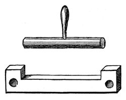
I wonder whether we shall be too deep to-day or not. Remember that we spoke of the attraction by gravitation of all bodies to all bodies by their simple approach. Remember that we spoke of the attraction of particles of the same kind to each other,--that power which keeps them together in masses,--iron attracted to iron, brass to brass, or water to water. Remember that we found, on looking into water, that there were particles of two different kinds attracted to each other; and this was a great step beyond the first simple attraction of gravitation; because here we deal with attraction between different kinds of matter. The hydrogen could attract the oxygen, and reduce it to water, but it could not attract any of its own particles; so that there we obtained a first indication of the existence of two attractions.
To-day we come to a kind of attraction even more curious than the last, namely, the attraction which we find to be of a double nature--of a curious and dual nature. And I want first of all to make the nature of this doubleness clear to you. Bodies are sometimes endowed with a wonderful attraction, which is not found in them in their ordinary state. For instance, here is a piece of shell-lac, having the attraction of gravitation, having the attraction of cohesion; and if I set fire to it, it would have the attraction of chemical affinity to the oxygen in the atmosphere. Now, all these powers we find in it as if they were parts of its substance; but there is another property which I will try and make evident by means of this ball, this bubble of air [a light india-rubber ball, inflated and suspended by a thread]. There is no attraction between this ball and this shell-lac at present: there may be a little wind in the room slightly moving the ball about, but there is no attraction. But if I rub the shell-lac with a piece of flannel [rubbing the shell-lac, and then holding it near the ball], look at the attraction which has arisen out of the shell-lac, simply by this friction, and which I may take away as easily by drawing it gently through my hand. [The Lecturer repeated the experiment of exciting the shell-lac, and then removing the attractive power by drawing it through his hand.] Again, you will see I can repeat this experiment with another substance; for if I take a glass rod and rub it with a piece of silk covered with what we call amalgam, look at the attraction which it has, how it draws the ball towards it; and then, as before, by quietly rubbing it through the hand, the attraction will be all removed again, to come back by friction with this silk.
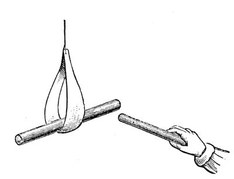
But now we come to another fact. I will take this piece of shell-lac and make it attractive by friction; and remember that whenever we get an attraction of gravity, chemical affinity, adhesion, or electricity (as in this case), the body which attracts is attracted also; and just as much as that ball was attracted by the shell-lac, the shell-lac was attracted by the ball. Now, I will suspend this piece of excited shell-lac in a little paper stirrup, in this way (fig. 33), in order to make it move easily, and I will take another piece of shell-lac, and after rubbing it with flannel, will bring them near together. You will think that they ought to attract each other; but now what happens? It does not attract; on the contrary, it very strongly repels, and I can thus drive it round to any extent. These, therefore, repel each other, although they are so strongly attractive--repel each other to the extent of driving this heavy piece of shell-lac round and round in this way. But if I excite this piece of shell-lac, as before, and take this piece of glass and rub it with silk, and then bring them near, what think you will happen? [The Lecturer held the excited glass near the excited shell-lac, when they attracted each other strongly.] You see, therefore, what a difference there is between these two attractions,--they are actually two kinds of attraction concerned in this case, quite different to anything we have met with before; but the force is the same. We have here, then, a double attraction--a dual attraction or force--one attracting, and the other repelling.
Again, to shew you another experiment which will help to make this clear to you. Suppose I set up this rough indicator again [the excited shell-lac suspended in the stirrup]--it is rough, but delicate enough for my purpose; and suppose I take this other piece of shell-lac, and take away the power, which I can do by drawing it gently through the hand; and suppose I take a piece of flannel (fig. 34), which I have shaped into a cap for it and made dry. I will put this shell-lac into the flannel, and here comes out a very beautiful result. I will rub this shell-lac and the flannel together (which I can do by twisting the shell-lac round), and leave them in contact; and then, if I ask, by bringing them nearer our indicator, what is the attractive force?--it is nothing! But if I take them apart, and then ask what will they do when they are separated--why, the shell-lac is strongly repelled, as it was before, but the cap is strongly attractive; and yet if I bring them both together again, there is no attraction--it has all disappeared [the experiment was repeated]. Those two bodies, therefore, still contain this attractive power: when they were parted, it was evident to your senses that they had it, though they do not attract when they are together.
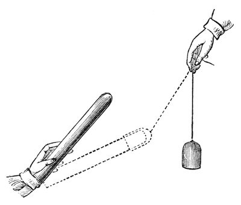
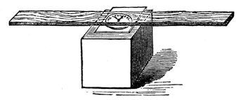
This, then, is sufficient in the outset to give you an idea of the nature of the force which we call ELECTRICITY. There is no end to the things from which you can evolve this power. When you go home, take a stick of sealing-wax--I have rather a large stick, but a smaller one will do--and make an indicator of this sort (fig. 35). Take a watch-glass (or your watch itself will do; you only want something which shall have a round face), and now, if you place a piece of flat glass upon that, you have a very easily moved centre. And if I take this lath and put it on the flat glass (you see I am searching for the centre of gravity of this lath--I want to balance it upon the watch-glass), it is very easily moved round; and if I take this piece of sealing-wax and rub it against my coat, and then try whether it is attractive [holding it near the lath], you see how strong the attraction is; I can even draw it about. Here, then, you have a very beautiful indicator, for I have, with a small piece of sealing-wax and my coat, pulled round a plank of that kind; so you need be in no want of indicators to discover the presence of this attraction. There is scarcely a substance which we may not use. Here are some indicators (fig. 36). I bend round a strip of paper into a hoop, and we have as good an indicator as can be required. See how it rolls along, travelling after the sealing-wax. If I make them smaller, of course we have them running faster, and sometimes they are actually attracted up into the air. Here also is a little collodion balloon. It is so electrical that it will scarcely leave my hand unless to go to the other. See, how curiously electrical it is: it is hardly possible for me to touch it without making it electrical; and here is a piece which clings to anything it is brought near, and which it is not easy to lay down. And here is another substance, gutta-percha, in thin strips: it is astonishing how, by rubbing this in your hands, you make it electrical. But our time forbids us to go further into this subject at present. You see clearly there are two kinds of electricities which may be obtained by rubbing shell-lac with flannel, or glass with silk.
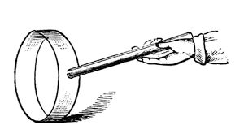
Now, there are some curious bodies in nature (of which I have two specimens on the table) which are called magnets or loadstones--ores of iron, of which there is a great deal sent from Sweden. They have the attraction of gravitation, and attraction of cohesion, and certain chemical attraction; but they also have a great attractive power, for this little key is held up by this stone. Now, that is not chemical attraction,--it is not the attraction of chemical affinity, or of aggregation of particles, or of cohesion, or of electricity (for it will not attract this ball if I bring it near it); but it is a separate and dual attraction--and, what is more, one which is not readily removed from the substance, for it has existed in it for ages and ages in the bowels of the earth. Now, we can make artificial magnets (you will see me to-morrow make artificial magnets of extraordinary power). And let us take one of these artificial magnets, and examine it, and see where the power is in the mass, and whether it is a dual power. You see it attracts these keys, two or three in succession, and it will attract a very large piece of iron. That, then, is a very different thing indeed to what you saw in the case of the shell-lac; for that only attracted a light ball, but here I have several ounces of iron held up. And if we come to examine this attraction a little more closely, we shall find it presents some other remarkable differences: first of all, one end of this bar (fig. 37) attracts this key, but the middle does not attract. It is not, then, the whole of the substance which attracts. If I place this little key in the middle, it does not adhere; but if I place it there, a little nearer the end, it does, though feebly. Is it not, then, very curious to find that there is an attractive power at the extremities which is not in the middle--to have thus in one bar two places in which this force of attraction resides! If I take this bar and balance it carefully on a point, so that it will be free to move round, I can try what action this piece of iron has on it. Well, it attracts one end, and it also attracts the other end, just as you saw the shell-lac and the glass did, with the exception of its not attracting in the middle. But if now, instead of a piece of iron, I take a magnet, and examine it in a similar way, you see that one of its ends repels the suspended magnet--the force then is no longer attraction, but repulsion; but if I take the other end of the magnet and bring it near, it shews attraction again.
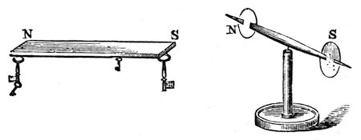
You will see this better, perhaps, by another kind of experiment. Here (fig. 38) is a little magnet, and I have coloured the ends differently, so that you may distinguish one from the other. Now this end (S) of the magnet (fig. 37) attracts the uncoloured end of the little magnet. You see it pulls it towards it with great power; and as I carry it round, the uncoloured end still follows. But now, if I gradually bring the middle of the bar magnet opposite the uncoloured end of the needle, it has no effect upon it, either of attraction or repulsion, until, as I come to the opposite extremity (N), you see that it is the coloured end of the needle which is pulled towards it. We are now therefore dealing with two kinds of power, attracting different ends of the magnet--a double power, already existing in these bodies, which takes up the form of attraction and repulsion. And now, when I put up this label with the word MAGNETISM, you will understand that it is to express this double power.
Now, with this loadstone you may make magnets artificially. Here is an artificial magnet (fig. 39) in which both ends have been brought together in order to increase the attraction. This mass will lift that lump of iron; and, what is more, by placing this keeper, as it is called, on the top of the magnet, and taking hold of the handle, it will adhere sufficiently strongly to allow itself to be lifted up--so wonderful is its power of attraction. If you take a needle, and just draw one of its ends along one extremity of the magnet, and then draw the other end along the other extremity, and then gently place it on the surface of some water (the needle will generally float on the surface, owing to the slight greasiness communicated to it by the fingers), you will be able to get all the phenomena of attraction and repulsion, by bringing another magnetised needle near to it.
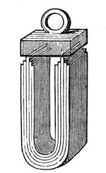
I want you now to observe, that although I have shewn you in these magnets that this double power becomes evident principally at the extremities, yet the whole of the magnet is concerned in giving the power. That will at first seem rather strange; and I must therefore shew you an experiment to prove that this is not an accidental matter, but that the whole of the mass is really concerned in this force, just as in falling the whole of the mass is acted upon by the force of gravitation. I have here (fig. 40) a steel bar, and I am going to make it a magnet, by rubbing it on the large magnet (fig. 39). I have now made the two ends magnetic in opposite ways. I do not at present know one from the other, but we can soon find out. You see when I bring it near our magnetic needle (fig. 38) one end repels and the other attracts; and the middle will neither attract nor repel--it cannot, because it is half-way between the two ends. But now, if I break out that piece (n s), and then examine it--see how strongly one end (n) pulls at this end (S, fig. 38), and how it repels the other end (N). And so it can be shewn that every part of the magnet contains this power of attraction and repulsion, but that the power is only rendered evident at the end of the mass. You will understand all this in a little while; but what you have now to consider is, that every part of this steel is in itself a magnet. Here is a little fragment which I have broken out of the very centre of the bar, and you will still see that one end is attractive and the other is repulsive. Now, is not this power a most wonderful thing? and very strange the means of taking it from one substance and bringing it to other matters? I cannot make a piece of iron or anything else heavier or lighter than it is. Its cohesive power it must and does have; but, as you have seen by these experiments, we can add or subtract this power of magnetism, and almost do as we like with it.
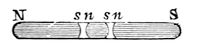
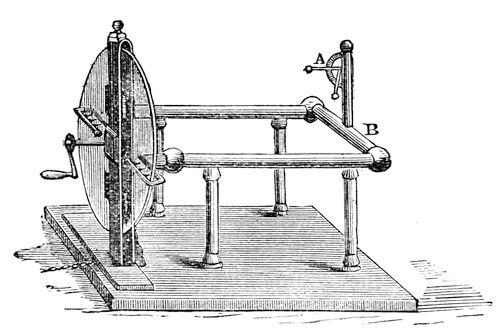
And now we will return for a short time to the subject treated of at the commencement of this lecture. You see here (fig. 41) a large machine, arranged for the purpose of rubbing glass with silk, and for obtaining the power called electricity; and the moment the handle of the machine is turned, a certain amount of electricity is evolved, as you will see by the rise of the little straw indicator (at A). Now, I know from the appearance of repulsion of the pith ball at the end of the straw, that electricity is present in those brass conductors (B B), and I want you to see the manner in which that electricity can pass away. [Touching the conductor (B) with his finger, the Lecturer drew a spark from it, and the straw electrometer immediately fell.] There, it has all gone; and that I have really taken it away, you shall see by an experiment of this sort. If I hold this cylinder of brass by the glass handle, and touch the conductor with it, I take away a little of the electricity. You see the spark in which it passes, and observe that the pith-ball indicator has fallen a little, which seems to imply that so much electricity is lost; but it is not lost: it is here in this brass; and I can take it away and carry it about, not because it has any substance of its own, but by some strange property which we have not before met with as belonging to any other force. Let us see whether we have it here or not. [The Lecturer brought the charged cylinder to a jet from which gas was issuing; the spark was seen to pass from the cylinder to the jet, but the gas did not light.] Ah! the gas did not light, but you saw the spark; there is, perhaps, some draught in the room which blew the gas on one side, or else it would light. We will try this experiment afterwards. You see from the spark that I can transfer the power from the machine to this cylinder, and then carry it away and give it to some other body. You know very well, as a matter of experiment, that we can transfer the power of heat from one thing to another; for if I put my hand near the fire it becomes hot. I can shew you this by placing before us this ball, which has just been brought red-hot from the fire. If I press this wire to it, some of the heat will be transferred from the ball; and I have only now to touch this piece of gun-cotton with the hot wire, and you see how I can transfer the heat from the ball to the wire, and from the wire to the cotton. So you see that some powers are transferable, and others are not. Observe how long the heat stops in this ball. I might touch it with the wire, or with my finger, and if I did so quickly, I should merely burn the surface of the skin; whereas, if I touch that cylinder, however rapidly, with my finger, the electricity is gone at once--dispersed on the instant, in a manner wonderful to think of.
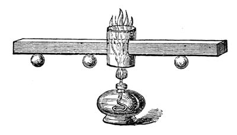
I must now take up a little of your time in shewing you the manner in which these powers are transferred from one thing to another; for the manner in which force may be conducted or transmitted is extraordinary, and most essential for us to understand. Let us see in what manner these powers travel from place to place. Both heat and electricity can be conducted; and here is an arrangement I have made to shew how the former can travel. It consists of a bar of copper (fig. 42); and if I take a spirit-lamp (this is one way of obtaining the power of heat), and place it under that little chimney, the flame will strike against the bar of copper and keep it hot. Now, you are aware that power is being transferred from the flame of that lamp to the copper, and you will see by-and-by that it is being conducted along the copper from particle to particle; for, inasmuch as I have fastened these wooden balls by a little wax at particular distances from the point where the copper is first heated, first one ball will fall, and then the more distant ones, as the heat travels along--and thus you will learn that the heat travels gradually through the copper. You will see that this is a very slow conduction of power, as compared with electricity. If I take cylinders of wood and metal, joined together at the ends, and wrap a piece of paper round, and then apply the heat of this lamp to the place where the metal and wood join, you will see how the heat will accumulate where the wood is, and burn the paper with which I have covered it; but where the metal is beneath, the heat is conducted away too fast for the paper to be burned. And so, if I take a piece of wood and a piece of metal joined together, and put it so that the flame should play equally both upon one and the other, we shall soon find that the metal will become hot before the wood; for if I put a piece of phosphorus on the wood, and another piece on the copper, you will find that the phosphorus on the copper will take fire before that on the wood is melted--and this shews you how badly the wood conducts heat. But with regard to the travelling of electricity from place to place, its rapidity is astonishing. I will, first of all, take these pieces of glass and metal, and you will soon understand how it is that the glass does not lose the power which it acquired when it is rubbed by the silk. By one or two experiments I will shew you. If I take this piece of brass and bring it near the machine, you see how the electricity leaves the latter, and passes to the brass cylinder. And, again, if I take a rod of metal and touch the machine with it, I lower the indicator; but when I touch it with a rod of glass, no power is drawn away,--shewing you that the electricity is conducted by the glass and the metal in a manner entirely different: and to make you see that more clearly, we will take one of our Leyden jars. Now, I must not embarrass your minds with this subject too much; but if I take a piece of metal, and bring it against the knob at the top and the metallic coating at the bottom, you will see the electricity passing through the air as a brilliant spark. It takes no sensible time to pass through this; and if I were to take a long metallic wire, no matter what the length--at least as far as we are concerned--and if I make one end of it touch the outside, and the other touch the knob at the top, see how the electricity passes!--it has flashed instantaneously through the whole length of this wire. Is not this different from the transmission of heat through this copper bar (fig. 42), which has taken a quarter of an hour or more to reach the first ball?
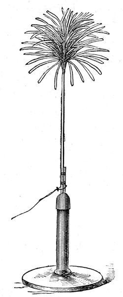
Here is another experiment, for the purpose of shewing the conductibility of this power through some bodies, and not through others. Why do I have this arrangement made of brass? [pointing to the brass work of the electrical machine, fig. 41]. Because it conducts electricity. And why do I have these columns made of glass? Because they obstruct the passage of electricity. And why do I put that paper tassel (fig. 43) at the top of the pole, upon a glass rod, and connect it with this machine by means of a wire? You see at once that as soon as the handle of the machine is turned, the electricity which is evolved travels along this wire and up the wooden rod, and goes to the tassel at the top, and you see the power of repulsion with which it has endowed these strips of paper, each spreading outwards to the ceiling and sides of the room. The outside of that wire is covered with gutta-percha. It would not serve to keep the force from you when touching it with your hands, because it would burst through; but it answers our purpose for the present. And so you perceive how easily I can manage to send this power of electricity from place to place, by choosing the materials which can conduct the power. Suppose I want to fire a portion of gunpowder, I can readily do it by this transferable power of electricity. I will take a Leyden jar, or any other arrangement which gives us this power, and arrange wires so that they may carry the power to the place I wish; and then placing a little gunpowder on the extremities of the wires, the moment I make the connection by this discharging rod, I shall fire the gunpowder. [The connection was made, and the gunpowder ignited.] And if I were to shew you a stool like this, and were to explain to you its construction, you could easily understand that we use glass legs, because these are capable of preventing the electricity from going away to the earth. If, therefore, I were to stand on this stool, and receive the electricity through this conductor, I could give it to anything that I touched. [The Lecturer stood upon the insulating stool, and placed himself in connection with the conductor of the machine.] Now, I am electrified--I can feel my hair rising up as the paper tassel did just now. Let us see whether I can succeed in lighting gas by touching the jet with my finger. [The Lecturer brought his finger near a jet from which gas was issuing, when, after one or two attempts, the spark which came from his finger to the jet set fire to the gas.] You now see how it is that this power of electricity can be transferred from the matter in which it is generated, and conducted along wires and other bodies, and thus be made to serve new purposes utterly unattainable by the powers we have spoken of on previous days; and you will not now be at a loss to bring this power of electricity into comparison with those which we have previously examined; and to-morrow we shall be able to go further into the consideration of these transferable powers.
We have frequently seen, during the course of these lectures, that one of those powers or forces of matter, of which I have written the names on that board, has produced results which are due to the action of some other force. Thus, you have seen the force of electricity acting in other ways than in attracting: you have also seen it combine matters together, or disunite them, by means of its action on the chemical force; and in this case, therefore, you have an instance in which these two powers are related. But we have other and deeper relations than these; we have not merely to see how it is that one power affects another--how the force of heat affects chemical affinity, and so forth--but we must try and comprehend what relation they bear to each other, and how these powers may be changed one into the other; and it will to-day require all my care, and your care too, to make this clear to your minds. I shall be obliged to confine myself to one or two instances, because, to take in the whole extent of this mutual relation and conversion of forces, would surpass the human intellect.
In the first place, then, here is a piece of fine zinc-foil; and if I cut it into narrow strips and apply to it the power of heat, admitting the contact of air at the same time, you will find that it burns; and then, seeing that it burns, you will be prepared to say that there is chemical action taking place. You see all I have to do is to hold the piece of zinc at the side of the flame, so as to let it get heated, and yet to allow the air which is flowing into the flame from all sides to have access to it;--there is the piece of zinc burning just like a piece of wood, only brighter. A part of the zinc is going up into the air, in the form of that white smoke, and part is falling down on to the table. This, then, is the action of chemical affinity exerted between the zinc and the oxygen of the air. I will shew you what a curious kind of affinity this is by an experiment, which is rather striking when seen for the first time. I have here some iron filings and gunpowder, and will mix them carefully together, with as little rough handling as possible. Now, we will compare the combustibility, so to speak, of the two. I will pour some spirit of wine into a basin, and set it on fire: and, having our flame, I will drop this mixture of iron filings and gunpowder through it, so that both sets of particles will have an equal chance of burning. And now, tell me which of them it is that burns? You see a plentiful combustion of the iron-filings. But I want you to observe that, though they have equal chances of burning, we shall find that by far the greater part of the gunpowder remains untouched. I have only to drain off this spirit of wine, and let the powder which has gone through the flame dry, which it will do in a few minutes, and I will then test it with a lighted match. So ready is the iron to burn, that it takes, under certain circumstances, even less time to catch fire than gunpowder. [As soon as the gunpowder was dry, Mr. Anderson handed it to the Lecturer, who applied a lighted match to it, when a sudden flash shewed how large a proportion of gunpowder had escaped combustion when falling through the flame of alcohol.]
These are all cases of chemical affinity; and I shew them to make you understand that we are about to enter upon the consideration of a strange kind of chemical affinity, and then to see how far we are enabled to convert this force of affinity into electricity or magnetism, or any other of the forces which we have discussed. Here is some zinc (I keep to the metal zinc, as it is very useful for our purpose), and I can produce hydrogen gas by putting the zinc and sulphuric acid together, as they are in that retort. There you see the mixture which gives us hydrogen--the zinc is pulling the water to pieces and setting free hydrogen gas. Now, we have learned by experience that, if a little mercury is spread over that zinc, it does not take away its power of decomposing the water, but modifies it most curiously. See how that mixture is now boiling; but when I add a little mercury to it, the gas ceases to come off. We have now scarcely a bubble of hydrogen set free, so that the action is suspended for the time. We have not destroyed the power of chemical affinity, but modified it in a wonderful and beautiful manner. Here are some pieces of zinc covered with mercury, exactly in the same way as the zinc in that retort is covered; and if I put this plate into sulphuric acid, I get no gas--but this most extraordinary thing occurs, that if I introduce along with the zinc another metal which is not so combustible, then I reproduce all the action. I am now going to put to the amalgamated zinc in this retort some portions of copper wire (copper not being so combustible a metal as the zinc), and observe how I get hydrogen again. As in the first instance, there the bubbles are coming over through the pneumatic trough, and ascending faster and faster in the jar. The zinc now is acting by reason of its contact with the copper.
Every step we are now taking brings us to a knowledge of new phenomena. That hydrogen which you now see coming off so abundantly does not come from the zinc, as it did before, but from the copper. Here is a jar containing a solution of copper. If I put a piece of this amalgamated zinc into it, and leave it there, it has scarcely any action; and here is a plate of platinum, which I will immerse in the same solution, and might leave it there for hours, days, months, or even years, and no action would take place. But by putting them both together, and allowing them to touch (fig. 44), you see what a coating of copper there is immediately thrown down on the platinum. Why is this? The platinum has no power of itself to reduce that metal from that fluid, but it has in some mysterious way received this power by its contact with the metal zinc. Here, then, you see a strange transfer of chemical force from one metal to another--the chemical force from the zinc is transferred, and made over to the platinum by the mere association of the two metals. I might take, instead of the platinum, a piece of copper or of silver, and it would have no action of its own on this solution; but the moment the zinc was introduced and touched the other metal, then the action would take place, and it would become covered with copper. Now, is not this most wonderful and beautiful to see? We still have the identical chemical force of the particles of zinc acting, and yet in some strange manner we have power to make that chemical force, or something it produces, travel from one place to another--for we do make the chemical force travel from the zinc to the platinum by this very curious experiment of using the two metals in the same fluid in contact with each other.
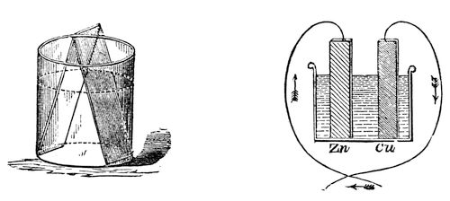
Let us now examine these phenomena a little more closely. Here is a drawing (fig. 45) in which I have represented a vessel containing the acid liquid, and the slips of zinc and platinum or copper, and I have shewn them touching each other outside by means of a wire coming from each of them (for it matters not whether they touch in the fluid or outside--by pieces of metal attached--they still by that communication between them have this power transferred from one to another). Now, if instead of only using one vessel, as I have shewn there, I take another, and another, and put in zinc and platinum, zinc and platinum, zinc and platinum, and connect the platinum of one vessel with the zinc of another, the platinum of this vessel with the zinc of that, and so on, we should only be using a series of these vessels instead of one. This we have done in that arrangement which you see behind me. I am using what we call a Grove’s voltaic battery, in which one metal is zinc, and the other platinum, and I have as many as forty pairs of these plates all exercising their force at once in sending the whole amount of chemical power there evolved through these wires under the floor, and up to these two rods coming through the table. We need do no more than just bring these two ends in contact, when the spark shews us what power is present; and what a strange thing it is to see that this force is brought away from the battery behind me, and carried along through these wires. I have here an apparatus (fig. 46) which Sir Humphry Davy constructed many years ago, in order to see whether this power from the voltaic battery caused bodies to attract each other in the same manner as the ordinary electricity did. He made it in order to experiment with his large voltaic battery, which was the most powerful then in existence. You see there are in this glass jar two leaves of gold, which I can cause to move to and fro by this rack-work. I will connect each of these gold leaves with separate ends of this battery; and, if I have a sufficient number of plates in the battery, I shall be able to shew you that there will be some attraction between those leaves, even before they come in contact. If I bring them sufficiently near when they are in communication with the ends of the battery, they will be drawn gently together; and you will know when this takes place, because the power will cause the gold leaves to burn away, which they could only do when they touched each other. Now, I am going to cause these two leaves of gold to approach gradually, and I have no doubt that some of you will see that they approach before they burn; and those who are too far off to see them approach will see by their burning that they have come together. Now they are attracting each other, long before the connection is complete; and there they go! burnt up in that brilliant flash--so strong is the force. You thus see, from the attractive force at the two ends of this battery, that these are really and truly electrical phenomena.
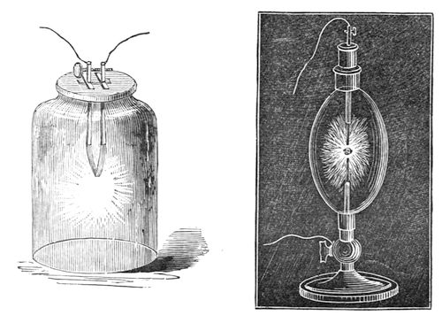
Now, let us consider what is this spark. I take these two ends and bring them together, and there I get this glorious spark, like the sunlight in the heavens above us. What is this? It is the same thing which you saw when I discharged the large electrical machine, when you saw one single bright flash; it is the same thing, only continued, because here we have a more effective arrangement. Instead of having a machine which we are obliged to turn for a long time together, we have here a chemical power which sends forth the spark; and it is wonderful and beautiful to see how this spark is carried about through these wires. I want you to perceive, if possible, that this very spark and the heat it produces (for there is heat) is neither more nor less than the chemical force of the zinc--its very force carried along wires and conveyed to this place. I am about to take a portion of the zinc and burn it in oxygen gas, for the sake of shewing you the kind of light produced by the actual combustion in oxygen gas of some of this metal. [A tassel of zinc-foil was ignited at a spirit-lamp, and introduced into a jar of oxygen, when it burnt with a brilliant light.] That shews you what the affinity is when we come to consider it in its energy and power. And the zinc is being burned in the battery behind me at a much more rapid rate than you see in that jar, because the zinc is there dissolving and burning, and produces here this great electric light. That very same power, which in that jar you saw evolved from the actual combustion of the zinc in oxygen, is carried along these wires and made evident here; and you may, if you please, consider that the zinc is burning in those cells, and that this is the light of that burning [bringing the two poles in contact, and shewing the electric light]; and we might so arrange our apparatus as to shew that the amounts of power evolved in either case are identical. Having thus obtained power over the chemical force, how wonderfully we are able to convey it from place to place! When we use gunpowder for explosive purposes, we can send into the mine chemical affinity by means of this electricity; not having provided fire beforehand, we can send it in at the moment we require it. Now, here (fig. 47) is a vessel containing two charcoal points, and I bring it forward as an illustration of the wonderful power of conveying this force from place to place. I have merely to connect these by means of wires to the opposite ends of the battery, and bring the points in contact. See what an exhibition of force we have! We have exhausted the air so that the charcoal cannot burn; and, therefore, the light you see is really the burning of the zinc in the cells behind me--there is no disappearance of the carbon, although we have that glorious electric light; and the moment I cut off the connection, it stops. Here is a better instance to enable some of you to see the certainty with which we can convey this force, where, under ordinary circumstances, chemical affinity would not act. We may absolutely take these two charcoal poles down under water, and get our electric light there;--there they are in the water, and you observe, when I bring them into connection, we have the same light as we had in that glass vessel.
Now, besides this production of light, we have all the other effects and powers of burning zinc. I have a few wires here which are not combustible, and I am going to take one of them, a small platinum wire, and suspend it between these two rods, which are connected with the battery; and, when contact is made at the battery, see what heat we get (fig. 48). Is not that beautiful?--it is a complete bridge of power. There is metallic connection all the way round in this arrangement; and where I have inserted the platinum, which offers some resistance to the passage of the force, you see what an amount of heat is evolved,--this is the heat which the zinc would give if burnt in oxygen; but as it is being burnt in the voltaic battery, it is giving it out at this spot. I will now shorten this wire for the sake of shewing you, that the shorter the obstructing wire is, the more and more intense is the heat, until at last our platinum is fused and falls down, breaking off the circuit.
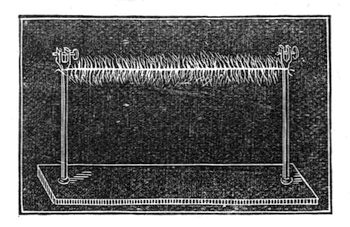
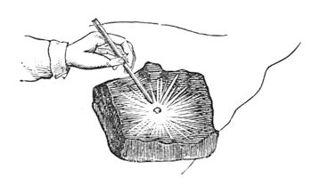
Here is another instance. I will take a piece of the metal silver, and place it on charcoal, connected with one end of the battery, and lower the other charcoal pole on to it. See how brilliantly it burns (fig. 49). Here is a piece of iron on the charcoal--see what a combustion is going on; and we might go on in this way, burning almost everything we place between the poles. Now, I want to shew you that this power is still chemical affinity--that if we call the power which is evolved at this point heat, or electricity, or any other name referring to its source, or the way in which it travels, we still shall find it to be chemical action. Here is a coloured liquid which can shew by its change of colour the effects of chemical action. I will pour part of it into this glass, and you will find that these wires have a very strong action. I am not going to shew you any effects of combustion or heat; but I will take these two platinum plates, and fasten one to the one pole, and the other to the other end, and place them in this solution, and in a very short time you will see the blue colour will be entirely destroyed. See, it is colourless now!--I have merely brought the end of the wires into the solution of indigo, and the power of electricity has come through these wires, and made itself evident by its chemical action. There is also another curious thing to be noticed, now we are dealing with the chemistry of electricity, which is, that the chemical power which destroys the colour is only due to the action on one side. I will pour some more of this sulpho-indigotic acid into a flat dish, and will then make a porous dyke of sand, separating the two portions of fluid into two parts (fig. 50); and now we shall be able to see whether there is any difference in the two ends of the battery, and which it is that possesses this peculiar action. You see it is the one on my right hand which has the power of destroying the blue--for the portion on that side is thoroughly bleached--while nothing has apparently occurred on the other side. I say apparently, for you must not imagine that, because you cannot perceive any action, none has taken place.
Editor's note: Sulpho-indigotic Acid.--A mixture of one part of indigo and fifteen parts of concentrated oil of vitriol. It is bleached on the side at which hydrogen gas is evolved, in consequence of the liberated hydrogen withdrawing oxygen from the indigo, thereby forming a colourless deoxidised indigo. In making the experiment, only enough of the sulpho-indigotic acid must be added to give the water a decided blue colour.
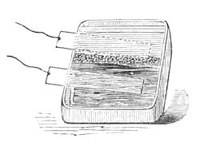
Here we have another instance of chemical action. I take these platinum plates again, and immerse them in this solution of copper, from which we formerly precipitated some of the metal, when the platinum and zinc were both put in it together. You see that these two platinum plates have no chemical action of any kind--they might remain in the solution as long as I liked, without having any power of themselves to reduce the copper;--but the moment I bring the two poles of the battery in contact with them, the chemical action, which is there transformed into electricity and carried along the wires, again becomes chemical action at the two platinum poles; and now we shall have the power appearing on the left-hand side, and throwing down the copper in the metallic state on the platinum plate; and in this way I might give you many instances of the extraordinary way in which this chemical action, or electricity, may be carried about. That strange nugget of gold, of which there is a model in the other room--and which has an interest of its own in the natural history of gold, and which came from Ballarat, and was worth £8,000, or £9,000, when it was melted down last November--was brought together in the bowels of the earth, perhaps ages and ages ago, by some such power as this. And there is also another beautiful result dependent upon chemical affinity in that fine lead-tree--the lead growing and growing by virtue of this power. The lead and the zinc are combined together in a little voltaic arrangement, in a manner far more important than the powerful one you see here; because, in nature, these minute actions are going on for ever, and are of great and wonderful importance in the precipitation of metals and formation of mineral veins, and so forth. These actions are not for a limited time, like my battery here, but they act for ever in small degrees, accumulating more and more of the results.
Editor's note: Lead Tree.--To make a lead tree, pass a bundle of brass wires through the cork of a bottle, and fasten a plate of zinc round them just as they issue from the cork, so that the zinc may be in contact with every one of the wires. Make the wires to diverge so as to form a sort of cone, and having filled the bottle quite full of a solution of sugar of lead, insert the wires and cork, and seal it down, so as to perfectly exclude the air. In a short time the metallic lead will begin to crystallise around the divergent wires, and form a beautiful object.
I have here given you all the illustrations that time will permit me to shew you of chemical affinity producing electricity, and electricity again becoming chemical affinity. Let that suffice for the present, and let us now go a little deeper into the subject of this chemical force, or this electricity--which shall I name first--the one producing the other in a variety of ways? These forces are also wonderful in their power of producing another of the forces we have been considering, namely, that of magnetism; and you know that it is only of late years, and long since I was born, that the discovery of the relations of these two forces of electricity and chemical affinity to produce magnetism have become known. Philosophers had been suspecting this affinity for a long time, and had long had great hopes of success; for in the pursuit of science we first start with hopes and expectations. These we realise and establish, never again to be lost, and upon them we found new expectations of further discoveries, and so go on pursuing, realising, establishing, and founding new hopes again and again.
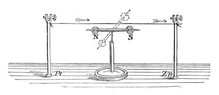
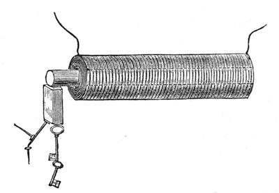
Now, observe this: here is a piece of wire which I am about to make into a bridge of force--that is to say, a communicator between the two ends of the battery. It is copper wire only, and is therefore not magnetic of itself. We will examine this wire with our magnetic needle (fig. 51); and though connected with one extreme end of the battery, you see that, before the circuit is completed, it has no power over the magnet. But observe it when I make contact; watch the needle--see how it is swung round, and notice how indifferent it becomes if I break contact again; so you see we have this wire evidently affecting the magnetic needle under these circumstances. Let me shew you that a little more strongly. I have here a quantity of wire, which has been wound into a spiral; and this will affect the magnetic needle in a very curious manner, because, owing to its shape, it will act very like a real magnet. The copper spiral has no power over that magnetic needle at present; but if I cause the electric current to circulate through it, by bringing the two ends of the battery in contact with the ends of the wire which forms the spiral, what will happen? Why, one end of the needle is most powerfully drawn to it; and if I take the other end of the needle, it is repelled: so you see I have produced exactly the same phenomena as I had with the bar magnet,--one end attracting, and the other repelling. Is not this, then, curious, to see that we can construct a magnet of copper? Furthermore, if I take an iron bar, and put it inside the coil, so long as there is no electric current circulating round, it has no attraction,--as you will observe if I bring a little iron filings or nails near the iron. But now, if I make contact with the battery, they are attracted at once. It becomes at once a powerful magnet--so much so, that I should not wonder if these magnetic needles on different parts of the table pointed to it. And I will shew you by another experiment what an attraction it has. This piece and that piece of iron, and many other pieces, are now strongly attracted (fig. 52); but as soon as I break contact, the power is all gone, and they fall. What, then, can be a better or a stronger proof than this of the relation of the powers of magnetism and electricity? Again, here is a little piece of iron which is not yet magnetised. It will not at present take up any one of these nails; but I will take a piece of wire and coil it round the iron (the wire being covered with cotton in every part, it does not touch the iron), so that the current must go round in this spiral coil. I am, in fact, preparing an electro-magnet (we are obliged to use such terms to express our meaning, because it is a magnet made by electricity--because we produce by the force of electricity a magnet of far greater power than a permanent steel one). It is now completed, and I will repeat the experiment which you saw the other day, of building up a bridge of iron nails. The contact is now made, and the current is going through; it is now a powerful magnet. Here are the iron nails which we had the other day; and now I have brought this magnet near them, they are clinging so hard that I can scarcely move them with my hand (fig. 53). But when the contact is broken, see how they fall. What can shew you better than such an experiment as this the magnetic attraction with which we have endowed these portions of iron? Here, again, is a fine illustration of this strong power of magnetism. It is a magnet of the same sort as the one you have just seen. I am about to make the current of electricity pass through the wires which are round this iron for the purpose of shewing you what powerful effects we get. Here are the poles of the magnet; and let us place on one of them this long bar of iron. You see, as soon as contact is made, how it rises in position (fig. 54); and if I take such a piece as this cylinder, and place it on, woe be to me if I get my finger between: I can roll it over, but if I try to pull it off, I might lift up the whole magnet; but I have no power to overcome the magnetic power which is here evident. I might give you an infinity of illustrations of this high magnetic power. There is that long bar of iron held out; and I have no doubt that, if I were to examine the other end, I should find that it was a magnet. See what power it must have to support not only these nails but all those lumps of iron hanging on to the end. What, then, can surpass these evidences of the change of chemical force into electricity, and electricity into magnetism? I might shew you many other experiments whereby I could obtain electricity and chemical action, heat and light, from a magnet; but what more need I shew you to prove the universal correlation of the physical forces of matter, and their mutual conversion one into another?
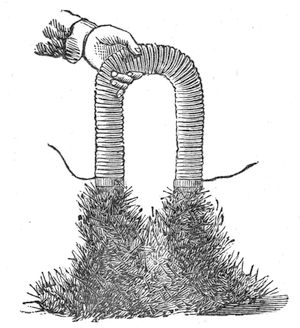
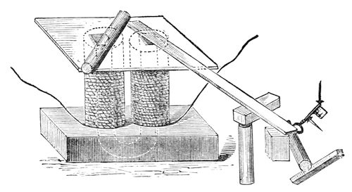
And now, let us give place, as juveniles, to the respect we owe to our elders; and for a time let me address myself to those of our seniors who have honoured me with their presence during these lectures. I wish to claim this moment for the purpose of tendering our thanks to them, and my thanks to you all, for the way in which you have borne the inconvenience that I at first subjected you to. I hope that the insight which you have here gained into some of the laws by which the universe is governed, may be the occasion of some amongst you turning your attention to these subjects; for what study is there more fitted to the mind of man than that of the physical sciences? And what is there more capable of giving him an insight into the actions of those laws, a knowledge of which gives interest to the most trifling phenomenon of nature, and makes the observing student find--
“----tongues in trees, books in the running brooks, Sermons in stones, and good in everything?”
[Delivered before the Royal Institution on Friday, 9th March, 1860.]
There is no part of my life which gives me more delight than my connection with the Trinity House. The occupation of nations joined together to guide the mariner over the sea, to all a point of great interest, is infinitely more so to those who are concerned in the operations which they carry into effect; and it certainly has astonished me, since I have been connected with the Trinity House, to see how beautifully and how wonderfully shines forth amongst nations at large the desire to do good; and you will not regret having come here to-night, if you follow me in the various attempts which have been made to carry out the great object of guiding in safety all people across the dark and dreary waste of waters. It is wonderful to think how eagerly efforts at improvement are made by the various public bodies--the Trinity House in this country, and Commissions in France and other nations; and whilst the improvements progress, we come to the knowledge of such curious difficulties, and such odd modes of getting over those difficulties, as are not easy to be conceived. I must ask you this evening to follow me from the simplest possible method of giving a sign by means of a light to persons at a distance, to the modes at which we have arrived in the present day; and to consider the difficulties which arise when carrying out these improvements to a practical result, and the extraordinary care which those who have to judge on these points must take in order to guard against the too hasty adoption of some fancied improvement, thus, as has happened in some few cases, doing harm instead of good.
If I try to make you understand these things partly by old models, and partly by those which we have here, it is only that I may the better be enabled to illustrate that which I look forward to as the higher mode of lighting, by means of the electric lamp and the lime light.
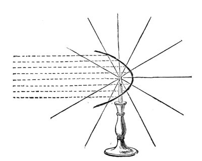
There is nothing more simple than a candle being set down in a cottage window to guide a husband to his home; but when we want to make a similar guide on a large scale, not merely over a river or over a moor, but over large expanses of sea, how can we then make the signal, using only a candle? I have shewn in this diagram (fig. 55) what we may imagine to be the rays of a candle or any other source of light emanating from the centre of a sphere in all directions round to infinite distances. After this simple kind of light had been used for some time--it being found to be liable to be obscured by fogs, or distance, or other circumstance--there arose the attempt to make larger lights by means of fires; and after that there was introduced a very important refinement in the mode of dealing with the light, namely, the principle of reflection,--for, understand this (which is not known by all, and not known by many who should know it), that when we take a source of light--a single candle, for instance, giving off any quantity of light--we can by no means increase that light: we can make arrangements around and about the light, as you see here, but we can by no means increase the quantity of light. The utmost I can do is to direct the light which the lamp gives me by taking a certain portion of the rays going off on one side and reflecting them on to the course of the rays which issue in the opposite direction. First of all, let us consider how we may gather in the rays of light which pass off from this candle. You will easily see that if I could take the half-rays on the one side, and could send them by any contrivance over to the other side, I should gain an advantage in light on the side to which I directed them. This is effected in a beautiful manner by the parabolic mirror, by means of which I gather all that portion of the rays which are included in it--upwards, downwards, sideways, anywhere within its sphere of action: they are all picked up and sent forward. You thus see what a beautiful and important invention is that of the parabolic reflector for throwing forward the rays of light.
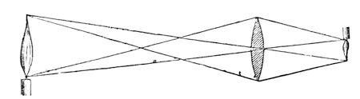
Before I go further into the subject of reflection, let me point out a further mode of dealing with the direction of the light. For instance, here is a candle, and I can employ the principle of refraction to bend and direct the rays of light; and if I want to increase the light in any one direction, I must either take a reflector or use the principle of refraction. I will place this lens (fig. 56) in front of the candle, and you will easily see that by its means I can throw on to that sheet of paper a great light; that is to say, that instead of the light being thrown all about, it is refracted and concentrated on to that paper. So here I have another means of bending the light and sending it in one direction; and you see above a still better arrangement for the same purpose,--one which comes up to the maximum, I may say, of the ability of directing light by this means. You are aware that without that arrangement of glass the light would be dispersed in all directions; but the lens being there, all the light which passes through it is thrown into parallel beams and cast horizontally along. There is consequently no loss of light--the beam goes forward of the same dimensions, and will consequently continue to go forward for five or ten miles, or so long as the imperfection of the atmosphere does not absorb it: and see, what a glorious power that is, to be able to convert what was just now darkness on that paper into brilliant light!
Whenever we have refraction of this sort, we are liable to an evil consequent upon the necessary imperfections in the form of the lens; and Dr. Tyndall will take this lens, and will shew you even in this small and perfect apparatus what is the evil of spherical aberration with which we have to fight. This can be illustrated by means of the electric lamp: if you look at the screen, you will see produced, by means of this lens, a figure of the coal points. This image is produced by the rays which pass through the middle of the lens, a piece of card with a hole in the centre being placed in front; but if, keeping the rest of the apparatus in the same position, I change this card for another piece which will only allow the rays to pass through the edge of the lens, you observe how inferior the image will be. In order to get it distinct, I have to bring the screen much nearer the lamp; and so, if I take the card away altogether, and allow the light to pass through all parts of the lens, we cannot get a perfect image, because the different parts of the lens are not able to act together. This spherical aberration is, therefore, what we try to avoid by building up compound lenses in the manner here shewn (fig. 58). Look at this beautiful apparatus--is it not a most charming piece of workmanship? Buffon first, and Fresnel afterwards, built up these kind of lenses, ring within ring, each at its proper adjustment, to compensate for the effects of spherical aberration. The ring round that centre lens is ground so as to obviate what would otherwise give rise to spherical aberration; and the next ring being corrected in the same manner, you will perceive, if you look at the disc of light thrown by the apparatus upstairs, that there is nothing like the amount of aberration that there would have been if it had been one great bull’s-eye. Here is one of Fresnel’s lamps of the fourth order so constructed (fig. 57): observe the fine effect obtained by these different lenses, as you see them revolve before you, and understand that all this upper part is made to form part of the lens, each prism throwing its rays to increase the effect; and although you may think it is imperfect, because, if you happen to sit below or above the horizontal line, you perceive but little if any of the light, yet you must bear in mind that we want the rays to go in a straight line to the horizon. So that all that building up of rings of glass is for the purpose of producing one fine and glorious lens of a large size, to send the rays all in one direction. Here is another apparatus used to pull the rays down to a horizontal sheet of light, so that the mariner may see it as a constant and uniform fixed light. The former lamp is a revolving one, and the light is seen only at certain times, as the lenses move round, and these are the points which make them valuable in their application.
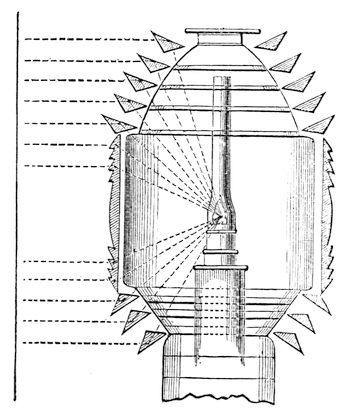
There are various orders and sizes of lights in light-houses, to shine for twenty or thirty miles over the sea, and to give indications according to the purposes for which they are required; but suppose we want more effect than is produced by these means, how are we to get more light? Here comes the difficulty. We cannot get more light, because we are limited by the condition of the burner. In any of these cases, if the spreading of the ray, or divergence, as it is called, is not restrained, it soon fails from weakness; and if it does not diverge at all, it makes the light so small, that perhaps only one in a hundred can see it at the same time. The South Foreland light-house is, I think, 300 or 400 feet above the level of the sea; and therefore it is necessary to have a certain divergence of the beam of light, in order that it may shine along the sea to the horizon. I have drawn here two wedges--one has an angle of 15°, and shews you the manner in which the light opens out from this reflector, seen at the distance of half-a-mile or more; the other wedge has an angle of 6°, which is the beautiful angle of Fresnel. When the angle is less than 6°, the mariner is not quite sure that he will see the light--he may be beneath or above it; and, in practice, it is found that we cannot have a larger angle than 15°, or a less one than 6°. In order, therefore, to get more light, we must have more combustion, more cotton, more oil; but already there are in that lamp four wicks, put in concentric rings, one within the other; and we cannot increase them much more, owing to the divergence which would be caused by an increase in the size of the light--the more the divergence, the more the light is diffused and lost. We are therefore restrained, by the condition of the light and the apparatus, to a certain sized lamp. At Teignmouth, some of the revolving lights have ten lamps and reflectors, all throwing their light forward at once. But even with ten lamps and reflectors, we do not get sufficient light; and we want, therefore, a means of getting a light more intense than a candle in the space of a candle--not merely an accumulation of candle upon candle, but a concentration, into the space of a candle, of a greater amount of light; and it is here that the electric light comes to be of so much value.
Let me now shew you what are the properties of that light which make it useful for light-house illumination, and which has been brought to a practical condition by the energy and constancy of Professor Holmes. I will, first of all, shew you the image of the charcoal points on the screen, and draw your attention to the spot where the light is produced. There are the coal points. The two carbons are brought within a certain distance; the electricity is being urged across by the voltaic battery, and the coal points are brought into an intense state of ignition. You will observe that the light is essentially given by the carbons. You see that one is much more luminous than the other, and that is the end which principally forms the spark. The other does not shine so much, and there is a space between the two, which, although not very luminous, is most important to the production of the light. Dr. Tyndall will help me in shewing you that a blast of wind will blow out that light--the electric light can, in fact, be blown out easier than a candle. We have the power of getting our light where we please. If I cause the electricity to pass between carbon and mercury, I get a most intense and beautiful light--most of it being given off from the portion of the mercury between the liquid and the solid pole. I can shew you that the light is sometimes produced by the vapour between the two poles better, if I take silver, than when I use mercury. Here is the carbon pole, there is the silver, and there is the beautiful green light, which comes from the intervening portions. Now, that light is more easily blown out than the common lamp, the slightest puff of wind being sufficient to extinguish it, as you will see if Dr. Tyndall breathes upon it.
You see, therefore, how we are able, by using this electric spark, to get, first of all, the light into a very small space. That oil-lamp has a burner 3¾ inches in diameter. Compare the size of the flame with the space occupied by this electric light. Next, compare the intensity of this light with any other. If I take this candle, and place it by the side, I actually seem to put out the candle. We are thus able to get a light which, while it surpasses all others in brilliancy, is at the same time not too large; for I might put this light into an apparatus not larger than a hat, and yet I could count upon the rays being useful. Moreover, when such large burners are used in a lantern, we have to consider whether the bars of the window do not interfere to throw a shadow or otherwise; but with this light there will be no difficulty of that sort, as a single small speculum, no larger than a hat, will send it in any direction we please; and it is wonderful what advantages, by reason of its small bulk, we have in the consideration of the different kinds of apparatus required, reflecting or refracting, irrespective of other reasons for using the electric light. And it is these kind of things which make us decide most earnestly and carefully in favour of the electric light.
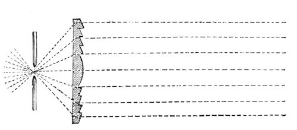
I am going to shew you the effect that will take place with that large lens, when we throw the oil-lamp out of action, and put the electric light into use. It is astonishing to find how little the eye can compare the relative intensities of two lights. Look at that screen, and try to recollect the amount of light thrown upon it from the 3¾ inch lamp of Fresnel; and, now, when we shift the lens sideways, look at the glorious light arising from that small carbon point (fig. 58)--see how beautifully it shines in the focus of that lens, and throws the rays forward. At present, the electric light is put at just the same distance as the oil light; and therefore, being in the focus of the lens, we have parallel rays which are thrown forward in a perfectly straight line--as you will see by comparing the size of the lens with that of the light thrown on the screen. You will now see how far we can affect this beam of light by increasing or diminishing the distance of the lamp. We are able, by a small adjustment, to get a beam of a large or small angle; and observe what power I have now over it,--for if I want to increase the degrees of divergence, I am limited by the power of light, in the case of the oil-lamp; but, with the electric light, I can make it spread over any width of the horizon by this simple adjustment. These, then, are some of the reasons which make it desirable to employ the electric light.
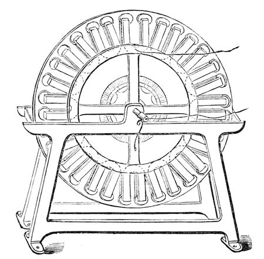
By means of a magnet, and of motion, we can get the same kind of electricity as I have here from the battery; and, under the authority of the Trinity House, Professor Holmes has been occupied in introducing the magneto-electric light in the light-house at the South Foreland; for the voltaic battery has been tried under every conceivable circumstance, and, I take the liberty of saying, it has hitherto proved a decided failure. Here, however, is an instrument wrought only by mechanical motion. The moment we give motion to this soft iron in front of the magnet, we get a spark. It is true, in this apparatus it is very small, but it is sufficient for you to judge of its character. It is the magneto-electric light; and an instrument has been constructed, as there shewn (fig. 59), which represents a number of magnets placed radially upon a wheel--three wheels of magnets and two sets of helices. When the machine, which is worked by a two-horse power engine, is properly set in motion, and the different currents are all brought together, and thrown by Professor Holmes up into the lantern, we have a light equal to the one we have been using this evening. For the last six months the South Foreland has been shining by means of this electric light--beyond all comparison, better than its former light. It has shone into France, and has been seen there and taken notice of by the authorities, who work with beautiful accord with us in all these matters. Never for once during six months has it failed in doing its duty--never once--more than was expected by the inventor. It has shone forth with its own peculiar character, and this even with the old apparatus; for, as yet, no attempt has been made to construct special reflectors or refractors for it, because it is not yet established. I will not tell you that the problem of employing the magneto-electric spark for light-house illumination is quite solved yet, although I desire it should be established most earnestly (for I regard this magnetic spark as one of my own offspring). The thing is not yet decidedly accomplished, and what the considerations of expense and other matters may be, I cannot tell. I am only here to tell you as a philosopher, how far the results have been carried; but I do hope that the authorities will find it a proper thing to carry out in full. If it cannot be introduced at all the light-houses--if it can only be used at one--why, really, it will be an honour to the nation which can originate such an improvement as this--one which must of necessity be followed by other nations.
You may ask, what is the use of this bright light? It would not be useful to us, were it not for the constant changes which are taking place in the atmosphere, which is never pure. Even when we can see the stars clearly on a bright night, it is not a pure atmosphere. The light of a light-house, more than any other, is liable to be dimmed by vapours and fogs; and where we most want this great power, is not in the finest condition of the atmosphere, but when the mariner is in danger--when the sleet and rain are falling, and the fogs arise, and the winds are blowing, and he is nearing coasts where the water is shallow, and abounds with rocks,--then is his time of danger, when he most wants this light. I am going to shew you how, by means of a little steam, I can completely obscure this glorious sun, this electric light which you see. The cloud now obscuring the light on the screen is only such a cloud as you see when sitting in a train on a fine summer’s day. You may observe that the vapour passing out of the funnel casts as deep a shadow on the ground as the black funnel; the very sun itself is extinguished by the steam from the funnel, so that it cannot give any light; and the sun itself, if set in the light-house, would not be able to penetrate such a vapour.
Now, the haze of this cloud of steam is just what we have to overcome, and the electric light is as soon, proportionally, extinguished by an obstruction of this kind as any other light. If we take two lights, one four times the intensity of the other, and we extinguish half of one by a vapour, we extinguish half of the other--and that is a fact which cannot be set aside by any arrangement. But, then, we fall back upon the amount of light which the electric spark does give us in aid of the power of penetrating the fog; for the light of the electric spark shines so far at times, that even before it has arisen above the horizon, twenty-five miles off, it can be seen. This intense light has, therefore, that power which we can take advantage of,--of bearing a great deal of obstruction, before it is entirely obscured by fogs or otherwise.
Taking care that we do not lead our authorities into error by the advice given, we hope that we shall soon be able to recommend the Trinity House, from what has passed, to establish either one or more good electric lights in this country.